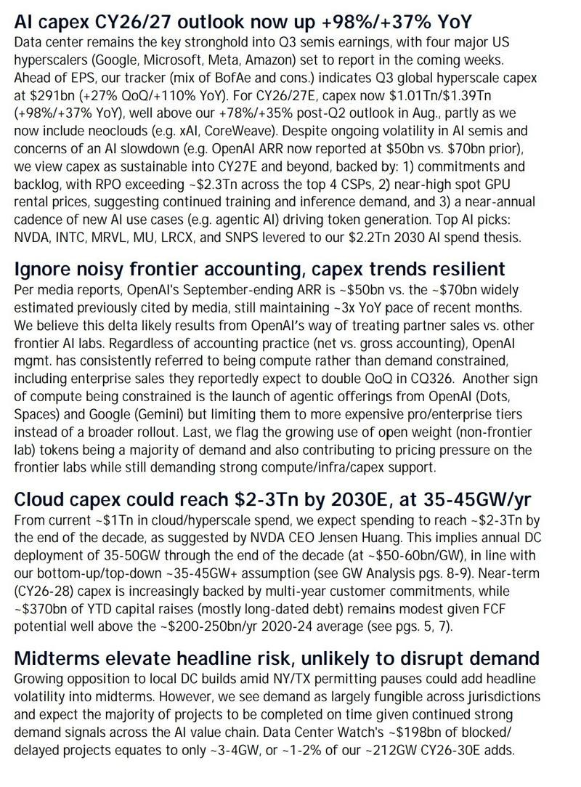
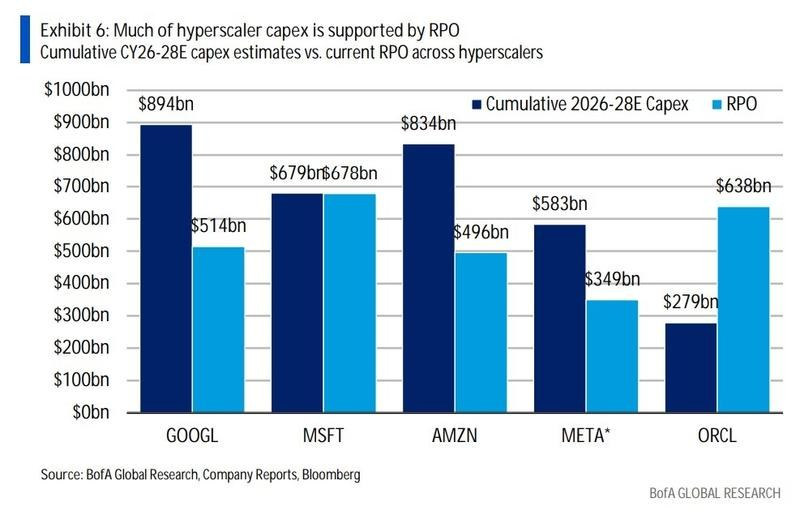

调研纪要 · 2026-10-10 新闻日报
星球 ID: 28855458518111 | 共 70 条帖子 | 精华 18 条
| 查看研究积累
书签
【Vicor 337调查点评】常规专利纠纷，代工端影响有限，无需过度担忧
【Vicor 337调查点评】常规专利纠纷，代工端影响有限，无需过度担忧
针对市场关注的美国ITC垂直供电系统337调查事件，#我们的核心判断是：这本质是一起由美国企业发起的常规知识产权商事纠纷，并非美国政府主导的定向贸易措施，对国内涉案代工企业的实质经营影响有限，市场无需过度担忧。
#一、先澄清最大误解：不是美国政府“出手”，是企业告状、机构按流程受理：
不少投资者看到“调查”二字，容易联想到过往贸易摩擦，误以为是美国政府主动针对中国企业。这里明确一下：337调查是一套“企业发起、行政机构居中裁判”的专利边境维权程序，美国国际贸易委员会（USITC）不会主动启动这类调查，必须由专利方企业主动提交侵权申诉。
本次事件完全由美国电源厂商Vicor主动发起，USITC只是对申诉材料做形式审查，符合受理条件就立案，后续还要经过证据交换、听证、初裁、终裁等完整程序，立案本身不代表侵权事实成立。这是美国知识产权体系运行了几十年的常规流程，各行各业都有大量同类案件，属于很普遍的商事纠纷，和“国家层面定向打压”完全是两回事。
#二、被告覆盖全球全产业链，绝非只针对中国企业
本次被调查的企业覆盖全球AI服务器主流供应链，并非只挑选中国大陆企业：美国本土的伟创力、MPS，加拿大的天弘，中国台湾的台达、广达、鸿海等头部厂商均在列，立讯精密、工业富联只是其中的部分参与方。
本质上这是Vicor针对全行业同类供电技术的商业维权，核心诉求是推动全行业支付专利许可费，是高端制造领域非常典型的“以专利谈商业”的操作，不存在定向针对中国大陆企业的情况。
#三、国内涉案企业以代工为主，电源部件可灵活替换，风险传导极低
这是本次事件最核心的风险缓冲点，也是市场最容易高估影响的地方：
立讯精密、工业富联在AI服务器产业链中主要承担整机代工组装角色，垂直供电模块属于上游零部件品类，通常由终端品牌客户指定，或从企业的合格供应商名录中选型。专利争议集中在电源模块本身的技术方案，而非代工制造环节。
退一步讲，即便后续出现不利裁定，代工企业也可以配合客户直接切换为获得Vicor授权、或不涉及侵权的其他电源供应商产品，不会影响代工订单的正常交付。打个通俗的比方：就像组装电脑，CPU有专利纠纷，更换合规型号即可，组装工厂的业务本身不会受到根本性冲击。
#四、同类案件早有先例，最终均平稳过渡
这并非Vicor首次在服务器电源领域发起337调查。2023年公司就曾针对传统服务器电源模块发起同类调查，最终绝大多数被诉企业通过专利许可、切换供应商、调整技术方案等方式平稳过渡，并未对全球服务器供应链造成实质冲击。
目前企业可选择的应对路径很充足：谈判专利许可、开展技术设计规避、通过法律程序主张专利无效或不侵权等，缓冲空间充分，最终走到“全面禁止进口”极端情形的概率极低。
综上，本次事件属于全球AI算力产业发展过程中的常规商业摩擦，短期对市场情绪的影响远大于对企业实际经营的影响。建议投资者理性跟踪案件进展及企业应对动作，避免因过度担忧做出非理性决策。
电源禁令解读：企业行为，核心为专利授权费，无实际影响。
电源禁令解读：企业行为，核心为专利授权费，无实际影响。
美东时间2026年10月9日，美国国际贸易委员会（USITC）正式公告立案337调查（337-TA-1526），案由为特定垂直电力传输系统（VPD）、相关组件及搭载该系统的计算系统专利侵权。本次调查由美国电源厂商Vicor发起，核心指控专利为US10,903,734，申请人请求获得有限排除令与停止侵权禁令，限制侵权产品进口及在美国本土销售。涉案被诉企业覆盖电源芯片、电源模组与服务器ODM领域，包含台达电子、立讯精密、芯源系统MPS、英飞凌、伟创力、天弘、广达电脑等产业链厂商。
VPD垂直供电是当前高功率AI服务器的核心供电技术路线，相比传统平面PCB供电可缩短电流回路、减少压降与损耗，适配高端GPU的大电流供电需求，是AIDC算力硬件的关键方案。本次也是行业内首起针对VPD架构的337调查，本质是Vicor依托自身专利壁垒，对竞争厂商北美AIDC市场VPD方案出货进行阻击，直接牵动AI服务器电源及整机供应链的美国市场准入。
结论：仅仅是企业行为，不是行政禁令。案件常规审理周期约12至18个月，由行政法官先完成证据开示、听证并出具初裁，再由USITC委员会作出最终裁定。若最终签发有限排除令，仅禁止涉案侵权产品进口美国，不影响企业其他非侵权产品线。
看了一圈本次337调查的国内财经报道，只剩失望——A股市场走得拧巴，从来都不缺“自己人搞自己人”的因素。
看了一圈本次337调查的国内财经报道，只剩失望——A股市场走得拧巴，从来都不缺“自己人搞自己人”的因素。
这本是美国企业主动发起的普通专利商事纠纷，美国国际贸易委员会不过是依申请履行法定立案程序，既不是政府主动出手打压，更不是定向针对中国。涉案被告覆盖全球多国厂商，连多家美国本土企业都位列其中，本质就是高端制造行业里司空见惯的专利商业博弈。
可国内绝大多数媒体，偏偏把“美国发起调查”顶在标题最前端，刻意模糊发起主体，故意往公众熟悉的“贸易打压”叙事上引。
国内受众本就因国情差异，对这类境外知识产权行政程序缺乏认知，看到“调查”二字本能就联想到行政性打压。而这些媒体既不解释337调查“企业申诉、官方居中裁判”的基本性质，也不说明被告遍及全球、连美国企业都在列的事实，更不提对国内代工企业而言，最坏情况也不过是更换上游电源供应商就能化解的事。
一件再常规不过的商业纠纷，硬是被渲染成山雨欲来的大利空，甚至带起“又要完蛋”“继续躲去喝酒吃药炒地产”的极端情绪，把市场预期搅得混乱不堪，看着令人痛心。
市场上太多无端的恐慌、莫须有的“利空”，根本不是事件本身带来的，恰恰是部分媒体为了流量，去头掐尾、只抛事件、不做解读，任由信息被歪曲解读的结果。这不是新闻报道，这是专业责任的集体缺位，是极其不负责任的流量收割。想要市场真正健康发展，先从整顿这种博眼球、带节奏的财经媒体乱象开始。
询问立讯电源337事宜的朋友比较多。我的观点是这事没什么影响，自媒体大字报而已，这在专利圈也不是什么新闻。大家可以查一下，Vicor从一月开始今年第三次了，前面...
询问立讯电源337事宜的朋友比较多。我的观点是这事没什么影响，自媒体大字报而已，这在专利圈也不是什么新闻。大家可以查一下，Vicor从一月开始今年第三次了，前面第二次Vicor都没占什么便宜，就马上对全产业链发起第三次，它就靠各种专利挑刺过活，我了解这次的案子应该后面也没什么特别影响，反而侧面说明立讯的VPD电源达到世界级水平，这个市场认知不够，加上立讯额外在SST领域的储备，我了解立讯整体AI电源业务明后年放量趋势很好。立讯几年前对APH单独的337都打赢了，这次Vicor全行业性质的337应对更不在话下，各位后续可以观察我说的对不对。这个位置的立讯正好在AI算力即将放量和AI端侧行业新品爆点带来业绩释放的拐点，估值历史低位，值得重点把握。招商电子鄢凡18601150178
美国对立讯精密、富士康等多家中国企业发起337调查
美国对立讯精密、富士康等多家中国企业发起337调查
【天风轻纺】商务部等发布品质电商“五优”行动，利好东方甄选
【天风轻纺】商务部等发布品质电商“五优”行动，利好东方甄选
■商务部等7部门按照《
提振消费专项行动方案 ↗》要求，大力培育品质电商，制定本方案。#我们认为东方甄选是品质电商核心代表；战略内核聚焦高质价比优质商品；强调品控质检及溯源等。更明确政策引导，有望营造更有利运营环境。
■行动提出（部分）：①推动平台规则向优转型；优化商品展示、推荐和营销活动机制；
②建立全链路品控体系。引导电商平台建立首席质量官制度，督促系统性、体系化构建质量管理体系；
③打造线上线下融合品质消费场景。鼓励线上品牌商到线下开设实体店，发展线上线下一体化运营模式；
④构建电商出海良好生态。推动出海平台建立“品牌+品质”双重审核机制和产品溯源体系。
■目前东方甄选成长已明确产品驱动，对主播等依赖显著降低；优质（自营）产品推新力度环比倍增，品控质检等人力投入同比倍增，大部分商品均有相对明确的溯源及检测机制；
同时，目前联合新东方布局线下，计划3年新开1000家实现线上线下联动。辅酶Q10软胶囊成功入驻澳洲线下药店后现已正式上架澳洲亚马逊线上渠道。
■东方甄选九十月GMV同比增长继续环比向上，延续年初以来强劲势能；我们看好后续持续性及盈利表现，建议积极关注！
----------------
欢迎交流 | 天风轻纺
孙海洋/于梦鸽
险资动态及保险业绩更新
险资动态及保险业绩更新
#传闻本周头部险企大幅赎回、减持
1）据目前了解情况并未出现基金和股票的大幅减持；2）Q3开始上级对于30%配置股票的跟踪有所增强；3）新准则下，减持权益无法调节利润，而下一个偿付能力节点在年底，当前节点大幅减持动力不足；4）我们判断增配权益的趋势仍将持续，尤其在未来放松偿付后。
#高权益仓位保险利润怎么看？
1）按中证800跌幅测算，Q1-3太保（-12%）>人保（-15%）>平安（-21%）>新华（-35%）>国寿（-40%）；2）另有oci债浮盈：平安4700亿>国寿3200亿>太保1900亿>人保380亿>新华340亿，平安、太保和新华均有兑现债券浮盈的经验；3）寿险利润主要反映过去资产端表现，且高基数已有预期，影响有限。
#保险板块怎么看
1）下行空间仅10%左右，安全边际较高，季报后配置性价比突出，推荐国寿、太保；2）当前估值隐含权益市场悲观预期，若后续市场改善，估值有较大改善空间，推荐新华、国寿；3）首份资负报告将在Q4落地，建议关注相关匹配进展，以及绝对收益方向标的，推荐人保H、平安。
高端商圈专家交流要点（WXC）
高端商圈专家交流要点（WXC）
泡泡玛特目前合作85家店，截至9月底门店数同比新增3家，核心为位置调优、扩大面积及重新装修，而非拓店。9月43家可比门店（不包含移位、扩店等）同店增长16%、增速回正，主要系去年同期labubu 3.0高基数逐步消化。Q2以来单店月均销维持在220万元左右，10月预计单店月均销将高于8-9月，但因基数原因同比可能仍承压。
老铺7个项目9月总销售同比增长73%，较7月（+24%）、8月（+55%）提速，主要来自新品、vip活动及迭代款折扣加大。新开的广州白鹅潭万象城定位M1级别项目，已与老铺签约且扣点为目前项目中最低（5%），其他项目多在7-10%之间，老铺将根据广州项目重奢品牌进驻情况考虑是否开业。
近期AI应用方向催化因素：
近期AI应用方向催化因素：
1、10月9日在Gemini at Work 2026大会上，谷歌今日公布了其最新前沿AI模型，命名为Gemini 4 Argon。据谷歌首席AI架构师兼DeepMind高级副总裁介绍，该新模型在''真实世界软件工程、法律和金融等企业知识工作，以及网络安全防御等复杂工作流程中展现出前沿性能''此外谷歌云正式推出企业通用智能体Gemini Agent，试图将原本分散在办公软件、数据平台和开发工具中的任务，交给一个能够自主规划、调用工具并持续执行的智能体。
2、10月8日OpenAI面向全球所有ChatGPT免费及付费用户全面上线GPT-6，正式取代GPT-5.6 SOL与GPT-5.6 LUNA。GPT-6集成Astra安全技术改进，强化针对网络、生物等领域滥用的防护。此外ChatGPT还迎来全新智能UI（Intelligent UI）功能，让AI回答不再局限于文字，而是能够直接生成图表、交互界面等内容。
3、10月8日据《
科创板日报 ↗》，AI药物研发初创企业Isomorphic Labs正推进新一轮融资初步洽谈。本轮投后估值至少400亿美元，最高有望达到500亿美元。业务层面，公司依托DeepMind旗下AlphaFold蛋白质结构预测模型在计算机上虚拟筛选、从头设计候选药物分子，覆盖药物早期发现全流程，减少大量湿实验成本与时间。
4、10月6日据IT之家，快手科技旗下的可灵AI(Kling AI)已经选定承销银行，筹备赴香港开展首次公开募股，此次IPO募资规模至少可达10亿美元。这家人工智能视频服务提供商目前正与中金公司、高盛集团以及瑞银集团合作推进潜在的股票发行事宜。可灵AI的目标是最早于明年完成上市。
5、快手旗下可灵AI正式发布新一代模型Kling 4.0，轻量版Kling 4.0 Flash已于9月28日开启小范围内测，完整版将于10月正式上线，从产品能力来看，Kling 4.0在画面真实感、叙事完整度、创意可控性上完成大幅升级，口型匹配、文字生成、创意复刻等功能实现突破，还优化了创作界面，降低创作者使用门槛。
AI应用是数字经济时代智能化转型的核心引擎，是AI大模型、智能体、AIGC等领域的核心底座，广泛应用于企业办公、软件开发、网络安全、金融分析等场景。近年来随着“人工智能+”战略深入实施，GPT-6全面上线、Gemini 4 Argon发布、企业级智能体加速落地成为行业增长亮点。国内方面，在“十五五”规划推动人工智能与实体经济深度融合的政策引领下，阿里、字节跳动、百度等国产AI企业加速全球化布局。10月9日谷歌在Gemini at Work 2026大会上公布最新前沿AI模型Gemini 4 Argon，并正式推出企业通用智能体Gemini Agent。根据Gartner数据显示，全球AI软件支出预计2027年将达6563.53亿美元，同比增长41%。随着全球大模型应用生态不断成熟，AI智能体等数字引擎的产业价值将持续凸显。
【国盛建材何亚轩/程龙戈团队】建材行业周度更新：10月电子布涨价延续
【国盛建材何亚轩/程龙戈团队】建材行业周度更新：10月电子布涨价延续
[太阳]水泥：本周全国水泥价格指数332元/吨，环比下跌0.12%。周内部分地区价格较节前涨后回落，水泥企业盈利水平小幅下降，假期期间需求相对平稳，预计节后部分省份将继续尝试推动小幅涨价。
[太阳]浮法玻璃：本周浮法玻璃均价1090.41元/吨，环比下跌2.58元/吨，跌幅0.24%。十一假期期间行情偏弱，库存进一步累积，重点城市库存6707万重箱，环比增长3.44%。高库存压力下预计短期价格低位运行。
[太阳]光伏玻璃：本周国内光伏玻璃主流订单价格稳定，2.0mm镀膜面板主流订单价格10-10.5元/平方米，均价环比持平。节前下游组件适量采购，需求前置，节日期间需求支撑稍转弱，库存缓增。近期行业供应量基本稳定，关注后续窑炉冷修计划推进情况。
[太阳]玻纤：粗纱端，本周2400tex缠绕直接纱均价3695.75元/吨，环比持平，假期下游多数深加工提货有限，厂库增加下短期各型号粗纱价格趋稳观望。电子纱端，10月G75纱均价26137.5元/吨，环比上涨13%，7628电子布均价13.35元/米，环比上涨13%，电子级玻纤全线产品价格中枢继续抬升。
[太阳]碳纤维：本周碳纤维市场均价8.55万元/吨，环比持平，行业供需基本面无明显起色，虽原料丙烯腈价格下跌，但成本压力支撑报价延续。
[太阳]行业周度数据来源：卓创资讯/上海钢联/百川盈孚/国盛证券研究所
[太阳]风险提示：金九银十需求修复力度不及预期风险；传统板块供给收缩进度不及预期风险；原材料价格大幅波动风险；成长板块竞争加剧风险。
☎详细行业数据库欢迎联系【国盛建材团队】何亚轩/程龙戈/陈冠宇
🪁🪁🪁磷化铟板块更新 2610
🪁🪁🪁磷化铟板块更新 2610
【1】#产业价格信号维持高景气_衬底大尺寸化趋势明确
——据通美，国内4/3/2英寸磷化铟衬底最新报价分别为7,000元/4,500元/1,200元，海外6/4/3英寸报价分别为1-3万元人民币/800+美元/450美元。
——8月底以来价格维持高位。据SMM，10.9我国4/3/2英寸磷化铟衬底当日均价分别为7,050元/3,850元/1,250元，当天最高价分别为7,500/4,000/1,300元，年初至今涨幅分别达63.8%/94.4%/3.7%，年内两轮提价集中在6/8月。
——4/3英寸衬底溢价率持续抬升。据SMM，截至10.9，4英寸/2英寸、3英寸/2英寸溢价率抬升至41.0%、36.9%，反映下游客户对外延加工的一致性、先进工艺的配套设备、加工效率等因素的偏好持续提升。
【2】#国内市场短期供需仍紧_FCC强化InP估值端逻辑
——短期视角下高频价格信号和库存水位均反映偏紧供需。“远期缺不缺”的问题短期内无解，但通美反馈当下排产已满，7/8月新增订单当年交付较困难，基本无法插单，最大外延片客户催单很急，推测下游几乎无库存。
——中期视角下“65%”再度强化了InP的战略价值。其一今明两年InP全球供给将由中国产能主导（卡海外光芯片脖子），其二涨价后的Inp衬底仅占光芯片约20%BOM（占光模块BOM极低个位数），因而在FCC阴影下的反制价值凸显，有望上修估值。
【3】#海外订单审批周期整体或缩短_地区性差异较大
——一事一议，没有固定的审批额度或者一年一批这种说法，流程是拿单，准备材料（合同+客户承诺书）提交商务部，商务部45个工作日受理之后组织专家审议（主要考察两用物项）。许可证一般有效期为6个月。
——审批周期或缩短，地区性差异较大。通美反馈25年审批不稳定性较强，审批周期在60天到半年不等，今年审批周期缩短，部分客户约40多天即可获批。整体而言，新加坡、欧洲客户相对顺畅，北美、台湾、日本客户相对偏紧。
💡推荐关注【光智科技】【海川智能】【博杰股份】【兴业科技】等
【天风建筑建材＆新材料】CCL 专家电话会系列--核心要点
【天风建筑建材＆新材料】CCL 专家电话会系列--核心要点
一、量价：前三季度满产满销、涨价30%–40%。头部AI用CCL月出货——台光100–120万张（M8占比超50%）、斗山60–70万张（M8主M7辅）、生益40–50万张（M8主）、松下20–30万张、联茂约30万张。M8.5约1200–1500元/张，因需求翻倍、供应不稳，后续不下行甚至上行；普通电子布10月已涨至13元，2026年内续涨，2027下半年新池窑投产后逐步缓解。
二、英伟达平台方案
• Rubin：计算板M8；交换/中板/CX9网卡用M8.5（112G–224Gbps之间，M8+2代布+Q布）；LPU用M9。
• Rubin Ultra NVL144：正交背板PCB要求高，量产或2027/2028；PTFE基材+碳氢PP、碳氢CCL+碳氢PP（带布/无布）双路线，验证78–104层；仅26层PTFE+碳氢混压达标，良率仅30%–40%。
• NVL576：8个NVL72经GPU交换机光互联，交换板9升至18张，进展优于NVL144，2027初望出小批量。分部位：计算板M8.5、交换板PTFE+M9（16层混压良率约60%）、中板M9（或加少量PTFE）、CX9用M9/M8.5、LPU升级M9 Q布或M9 Q布+PTFE混压；PTFE与碳氢PP约1:1。
• 费曼平台：对应NVL Kyber/NVL1152，8个144G做CPU光互联，GPU 72升至1152，为2028量产准备，测试中。
三、技术路线：PTFE电性能最优但柔软、低表面能、难加工，供应链与传统碳氢不重合；碳氢无布为有布升级（去玻璃布降Df），加工性优但电性能不及PTFE，硬脆、CTE差、需专用设备，可供应厂商仅2–3家。配方多含BCB（含量越高介损越好），无布需加约10%低Df热塑性弹性体增韧剂；16层碳氢无布良率预估70%–80%（验证中）。台光更看好碳氢路线，电性能比PTFE差5%–10%。
四、上游格局
• 树脂：东材侧碳氢（PPO/PPE弱）、圣泉侧PPO/PPE（碳氢弱）、呈和核心PPO（碳氢落后）、瑞丰主打增韧剂（收购的觅拓有BCB合成能力）。
• 铜箔：海外三井/福田/金居/卢森堡/长春化工为主力，产能被生益/台光/斗山/松下瓜分；国内德福、铜冠领先、已小批量；生益—德福、台光—铜冠战略合作。
• 玻璃布：供不应求、配额制，为CCL扩产核心瓶颈；日东纺配生益/台光/斗山、台玻供台光/斗山、中材供台光、光远供斗山；中国巨石等新进入者仍认证。
• 球硅：高端化学法球硅60%–70%、联瑞新材20%–30%。
五、客户与竞争：斗山因CTE达标+报价低5%–10%+渠道资源独霸计算板M8（生益CTE不达标未进体系）。SY已向Arista、思科、华为、H3C、星网锐捷、中际旭创送样，终端只认光模块/交换机性能、不单独认证CCL；谷歌TPU服务器板V7/V8送样中、进展慢（台系PCB主导+贸易战下对大陆CCL有顾虑）。
【金刚石散热】美国热管理公司发布金刚石冷板，金刚石散热产业化提速，持续推荐！[福][福][福]
【金刚石散热】美国热管理公司发布金刚石冷板，金刚石散热产业化提速，持续推荐！[福][福][福]
1、美国热管理公司发布金刚石冷板，可适配现有芯片封装及液冷方案。10月8日，美国热管理公司Frore Systems发布LiquidJet Diamond液冷冷板。该方案在冷板底部、GPU裸片热点正上方，集成一层7mm×7mm的金刚石均热片。LiquidJet Diamond方案无需改动芯片封装及现有液冷基础设施，可应用于GB300、Rubin Ultra、Feynman、MI455/MI500及定制ASIC。
2、预计单晶金刚石、金刚石铜有望率先产业化，
1）单晶金刚石：热导率最高，长晶速度快，可用于Chip-to-Wafer键合。
2）多晶金刚石：目前散热片尺寸可达8英寸以上，可用于Wafer-to-Wafer键合。
3）金刚石铜：相较纯金刚石可加工性更优，成本更低。目前已落地我国首个全国产十万卡AI超集群曙光8000、联想部分型号笔记本等。
3、投资建议：金刚石散热未来有望“订单为王”！期待上亿元、十亿元、甚至几十亿元级别订单落地！[福][福][福]
重点推荐九州一轨、国机精工、四方达、斯莱克、杰美特等；关注宏昌科技、沃尔德、黄河旋风、晶盛机电、中兵红箭、力量钻石等。
【国信食饮】月度数据跟踪（持续更新）
【国信食饮】月度数据跟踪（持续更新）
1、青岛啤酒：渠道反馈9月全国销量微增1%，其中山东地区由负转为微增但吨价高单下滑。1-9月销量累计中单下滑。
2、百润股份：渠道反馈9月预调酒发货双位数下滑，主因备货前置且去年高基数，7-8月发货个位数增长，Q3整体预调酒实际动销较为平稳。Q3威士忌预计持平。
3、鸣鸣很忙：抖音口径9月新开店1500+家、9月末门店数量已接近3万家。
4、万辰集团：抖音口径9月新开店1200+家、9月末门店数量已接近2.6万家（实际预计更多）。7-8月同店表现不错，预计Q3同店整体较为平稳。
5、洽洽食品：9月趋势与7-8月接近，9月及Q3收入增速预计在10%附近。
6、伊利股份：渠道反馈9月收入增速2%，金典2-3%，费率同比微增，渠道库存健康。公司口径动销平稳，Q3液奶持平略增。
7、蒙牛乳业：9月液奶出货同比持平、环比8月增长中个位数，8-9月合计同比增长中个位数。9月常温奶同比下滑低个位数、高端白奶和基础白奶下滑低个位数、低温酸奶同比增长低个位数、低温鲜奶同比增长20%+。
8、农夫：渠道反馈9月整体收入同比+14.2%，饮料类同比+25%，兑奖活动已于8月结束，#但东方树叶仍维持30%+高增，茶π、尖叫、维他命双位数增长；包装水同比下滑，行业承压小瓶水场景收缩加功能型/无糖茶产品分流。
9、东鹏：公司反馈9月动销符合预期；渠道反馈9月出货口径同比+10%，特饮+5%、补水啦+14%、茶饮料+147%，环比略有降速主要系北方天气转冷和考核动销调整渠道。
10、康统：9月趋势均与7-8月接近，Q3统一收入预计持平略增，成本压力尚可，预计利润率持平。
11、海天味业：预计9月微增趋势延续，全年高个位数目标略有压力。
12、安井食品：9月预计在旺季备货+收紧促销下主业实现双位数增长。
【兴证医药】Revolution Medicines披露经治转移性胰腺导管腺癌亚组数据
【兴证医药】Revolution Medicines披露经治转移性胰腺导管腺癌亚组数据
Daraxonrasib此前依据RASolute 302研究获批上市。该全球随机III期试验入组500例经治转移性胰腺导管腺癌患者，1:1分配至daraxonrasib（300 mg口服每日一次）或研究者选择的化疗，91.8%携带RAS G12突变。中位OS 13.2 vs 6.6个月（HR 0.40，P<0.001），死亡风险降低60%；中位PFS 7.3 vs 3.5个月（HR 0.45）；ORR 32% vs 11%。安全性优于化疗：≥3级治疗相关不良事件43.6% vs 57.5%，停药率1.2% vs 11.2%。FDA于2026年8月26日批准其上市，适应症不附带RAS/KRAS突变检测要求。
Revolution Medicines披露RASolute 302临床研究亚组数据，该亚组数据系 FDA 应审评要求开展的探索性分析。ORR呈明显亚型差异：全人群33%，G12V 50%，G12D 24%，G12R仅7%、低于化疗组的14%。PFS（BICR）方面，G12D、G12V亚组HR分别为0.48（95% CI 0.33–0.69）和0.54（0.33–0.87），G12R为0.80（0.41–1.56）。OS探索性分析显示各亚组均获益，相对化疗改善幅度G12D为51%、G12R为39%、G12V为68%。FDA指出，不同KRAS突变活化/非活化状态平衡不同，可能影响RAS(ON)抑制剂的可结合性；G12R还存在降低RAS信号依赖的机制，可能导致耐药。公司认为OS为肿瘤学金标准终点，各亚组一致的OS改善支持不限基因型的获批适应症。
Revolution Medicines同时推进G12D 选择性抑制剂 zoldonrasib（RMC-9805）联合用药组合。临床I/II期联合改良FOLFIRINOX一线治疗ORR达82%，临床III期RASolute 305评估其联合化疗一线治疗G12D PDAC；I期联合daraxonrasib二线治疗ORR为50%，临床III期RASolute 309对比双药组合与吉西他滨+白蛋白紫杉醇一线治疗G12D PDAC，主要终点为PFS和OS。
资料来源：公司官网、FDA官网
仅为公开资料整理，不涉及投资建议
联系人：刘焕彬18819481310/杨希成/黄翰漾/孙媛媛
Ginkgo与X-lab达成蛋白质测试服务合作，AI4S产业趋势持续演绎
Ginkgo与X-lab达成蛋白质测试服务合作，AI4S产业趋势持续演绎
[庆祝]事件：
10月9日，根据Ginkgo公司官网的消息，Ginkgo将开放其位于波士顿自主化实验室的实物使用权，支持美国国家科学基金会（NSF）X-Labs 项目。
NSF X-Labs 是一项为期十年、#总额 15 亿美元的计划，作为 X-Labs 合作的一部分，Ginkgo 向项目团队#提供蛋白测试服务。研究者无需自建湿实验室，就可以快速表达并表征蛋白设计，包含 AI 模型生成的蛋白序列。
Ginkgo的波士顿自动化实验室依托其可重构自动化推车（RACs）运行，这是一种模块化机器人，结合了机械臂、磁悬浮样品传输技术和Catalyst软件，#可全天候开展高混合度实验室工作。
[玫瑰]观点：
1.我们认为整个AI4S已经进入到不可忽视的新阶段，行业发展逻辑正从科学家决策向智能化自主决策验证切换，科学研究范式或被重塑：早期药物发现从低频验证范式转向高频、高通量、多轮快速迭代新范式；
2. 高频迭代短期带来验证阶段需求井喷，长期看高速迭代有望带来平台能力提升与泛化；
3. 我们认为两类公司值得关注：1）受益于湿实验验证需求增长的供应链公司，如金斯瑞科技、义翘神州、百普赛斯、近岸蛋白等；2）具备真实湿实验产能与临床管线的公司，如剂泰科技、英矽智能、晶泰科技、和铂医药等。
[爆竹]风险提示：技术发展不及预期的风险、政策不确定的风险、研发不及预期的风险
【中金互联网】腾讯控股：AI投入坚定，静待业务成果
【中金互联网】腾讯控股：AI投入坚定，静待业务成果
[玫瑰]我们更新对腾讯的追踪，公司主营的游戏、广告、金融和企服业务延续高质量增长，大模型、Agent布局加速。
[太阳]国内游戏、金融平稳增长，广告、云增长动能持续。
1）游戏：我们预计3Q国内游戏收入同增11%，长青游戏基本盘稳健，关注IP衍生新品长线运营表现；我们预计3Q海外游戏收入同比降低4%，主要系高基数影响。
2）广告：我们预计3Q广告收入同增19%，短期宏观有所压力，但视频号加载率提升，AI提效，海外游戏IAA收入等积极因素依然在。
3）FBS：我们预计3Q金融与企业服务收入同增11%，受宏观与消费情绪影响，我们预计金融科技增速平稳；我们预计企业服务收入同增超30%，我们预计2H云计算仍有望进一步提速，AI相关收入有所贡献。
此外，主业毛利率稳中向好，自研游戏和视频号广告占比提升有望驱动毛利率优化。
[庆祝]模型、Agent进展加速，今明两年仍是投入期。
模型层，8月底公司发布并开源混元Hy4 preview模型，规模和能力相较前一代跃升，今年2月以来，混元平均每两个月迭代一次大版本，节奏明显加速。
Agent产品侧，6月以来“小微”测试范围持续扩大，WorkBuddy用户访问量在同类产品名列前茅，公司预计其商业化反馈良好，付费从少数长期用户向多种类个人提效、企业提效延伸。
公司预计3-4Q为AI新产品重点投入期，当前以补贴与免费方式获取用户，催化需求持续上行，为后续付费转化打下基础，且27年AI新业务的投入规模可能更大，我们预计AI投入加大对短期利润造成压力，我们预计3Q经调整营业利润同比降低1%。我们认为AI发展即将进入应用驱动为主阶段，而腾讯拥有丰富场景和生态优势，有望在AI应用时代把握先机，迎来价值重估。
[太阳]【微创机器人-B】商业化加速趋势不可挡，海内外竞争力持续提升。绝佳买点，强力推荐！
[太阳]【微创机器人-B】商业化加速趋势不可挡，海内外竞争力持续提升。绝佳买点，强力推荐！
[玫瑰]商业化加速趋势不可挡，有望持续得到验证。截至26年6月16日（最新公布数据），图迈机器人全球商业化订单突破300台。历史数据：截至26年3月26日，图迈机器人全球商业化订单突破220台，覆盖超50个国家和地区，已完成商业化装机超过140台。截至26年2月12日，图迈全球范围内累计商业化订单超过200台，累计商业化装机量突破130台。截至26年1月21日，图迈全球范围内累计商业化订单超过180台，累计商业化装机量已突破120台。截至25年12月24日，图迈腔镜手术机器人在全球范围内累计商业化订单超过160台，含25年新获订单近120台。25年中报数据，全球累计商业化订单已突破80台，全球商业化装机突破60台。根据公开统计数据，图迈2025年全球订单量已跻身全球前二，未来有望复制直觉外科发展历程。
[玫瑰]公司全球化战略正快速得到市场验证，海外竞争力持续提升。公司正在全球市场构建起可复制、可扩展、可持续加速的增长曲线，实现在全球不同地域成熟医疗体系内的常态化、网络化、规模化使用。国内方面，随着腔镜机器人配置证政策宽松化，以及收费政策推出，行业渗透率有望持续提升。公司是全球首家、也是目前唯一一家实现手术机器人“全赛道产品商业化上市”的企业，覆盖腔镜、骨科、血管介入、自然腔道、经皮穿刺等五大赛道。基于公司全球多层级医疗体系的深度布局和丰富的商业化产品，一张由全球顶尖专家牵引、区域医疗中心深度协同、基层医院积极参与，贯通学术体系、技术体系与临床体系的立体化机器人手术生态网络正在迅速形成，公司商业化迈入发展加速阶段。
[握手]联系人：中邮医药盛丽华/岑峻宇
考虑到海外销售增长强劲，我们预计【绿联科技】3季度利润仍有双位数正增长，市场部分预期0增长。
考虑到海外销售增长强劲，我们预计【绿联科技】3季度利润仍有双位数正增长，市场部分预期0增长。
🔥【招商电子】景旺电子：Q3业绩预增大超预期，AI业务放量叠加主业盈利抬升将持续推动业绩高增-261009
🔥【招商电子】景旺电子：Q3业绩预增大超预期，AI业务放量叠加主业盈利抬升将持续推动业绩高增-261009
9号公司盘后公告Q3业绩预增：26Q3收入61.2-69.8亿，同比增长53.5%-75.1%，环比增长29.7%-47.9%；归母净利9.12-10.89亿，同比增长205.5%-264.7%，环比增长147.2%-195.2%；扣非归母净利9.39-11.16亿，同比增长294.3%-368.7%，环比增长239.9%-304.0%。按照中位数计算，净利率15.3%，同比+7.6pcts环比+7.5pcts；扣非净利率15.7%，同比+9.7pcts环比+9.8pcts。意外的是，公司Q3扣非归母还高于归母净利，凸显公司整体经营质量和盈利能力得到大幅提升（再考虑公司目前每个季度有4kw+的股权激励固定费用，业务的实际盈利水平相当不错）。
据公司公告业绩变化主因：1）受益于高速通信与AI数据基础设施领域的高性能PCB量产出货提速，叠加通用产品领域的成本价格合理传导、订单结构优化、内部降本增效等多措并举；2）公司在AI服务器与数据中心、高速光模块领域的在手订单饱满，产能利用率及良率较高，公司正全力保障交付目标的达成。公司相信过去数年的战略投入正快速转化为持续的价值增长，将持续深化与多家全球领先客户的战略合作伙伴关系，深度参与未来产品的先期开发、联合技术攻关和前瞻性协同，为后续产品迭代升级打下坚实基础。
结合我们对行业和公司的跟踪，我们再次重申公司和行业正发生着的重要且深刻的逻辑变化！
1、#公司优秀的生产工艺管理流程是其良品交付率大超预期的关键。近期，公司光模块mSAP工艺和Switch tray 等高端PCB加工的良率提升速度超出市场和我们团队的预期。我们认为这是公司多年以来深耕车规级产品市场中锻炼和积淀下来的细致入微的生产工艺管理能力和严苛的产品品控，造就了公司在工业级产品中的良率表现。
2、#26-28年产品交付良率或将成为比产能规模成为订单份额划分更为重要的评判指标。AI-PCB作为算力设施基础元件，其可靠性和稳定性是下游客户极为关注的性能指标。结合近两年PCB产业链Capex来看，从24H2开始，多数PCB厂商均在加大对面向于AI算力领域的PCB产品的投入，高阶HDI、超高多层板等新增产能预计26H2-2027年将持续释放，#产能规模这一先发优势将不再是关键因素。而据我们观察，未来1-2年内，高速M8-M9等级的CCL依旧是全行业最为珍贵的稀缺资源，下游算力客户一定会以高良品交付率作为对供应商核心考察指标，增加对高良率厂商的激励力度，而品控不佳的厂商会有掉队风险。
3、考虑到公司和行业的发展趋势，#我们认为景旺未来在大客户中的订单份额将持续获得超预期的提升，除了超高多层料号，高阶HDI的计算板亦将在Q4得到量产突破，且参考其mSAP工艺能力来看，高阶HDI的良率爬坡亦值得期待。此外，公司在PTFE、陶瓷基板HDI、超高多层方面均与下游客户保持紧密的互动合作，技术储备和卡位靠前。在CSP厂商中，我们预计26Q4-2027年景旺将在G、A、M等客户都会陆续取得量产突破，未来公司算力业务收入的增长将取决于其高端产能规模的释放。Q4 AI领域的HLC、HDI、mSAP等产品均进入到放量阶段，高毛利的业务占比将持续提升。
4、根据我们近期对非AI领域PCB、CCL行业的跟踪，CCL每月涨价节奏保守预期持续至 2027 年 6 月、后高位横盘，乐观预期将持续至 2027 年底，而#PCB环节顺价机制全面打通，定价模式发生根本性变化。公司传统主业将显著受益于此轮涨价周期，盈利能力有望持续修复，并贡献超预期的利润弹性。10🈷️公司非AI领域订单价格依旧保持逐月双位数的涨幅，订单排产能见度已到年底，利润率保持向上的通道中。
在此，我们需要注重强调，#这是景旺首个释放强劲业绩的季度财报，#后续看公司的同比增长依旧会提速、环比仍处于高速增长区间，是当下PCB板块中同时具备“AI升级放量+主业涨价”双轮驱动的强业绩兑现的Alpha标的。#我们坚定看好！
鄢凡18601150178/程鑫13761361461/涂锟山，欢迎与我们交流
名创优品更新：26Q3国内延续增长，9月美国边际改善
名创优品更新：26Q3国内延续增长，9月美国边际改善
#国内业务Q3在高基数下延续快速增长
根据公告，公司预计26Q3 GMV同比+25%~30%，同店高单增长。国庆（10.1-10.7） GMV同比+20%~25%，同店低单增长。
公司26上半年国内收入增长26.2%，同店实现中个位数增长，三季度增长有所提速（#25Q3名创国内同店增长高个位数，基数并不低）
#海外业务美国9月边际改善
根据公告，公司预计26Q3 海外市场表现符合指引。其中美国市场26Q3 GMV同比约+20%；受新品到货拉动，9月单月GMV同比超30%，同店销售实现正增长。
公司26H1北美收入增长37%，26H1同店实现中个位数增长，26全年目标低个位数同店增长，随着产品补货9月北美边际改善。
#自有IP势能较强YOYO破十亿
根据公告， 26年前九个月YOYO累计GMV超10亿元，销售拓展至全球53国。
其中YOYO在26年6月和7月销售破亿，8月销售破2亿，YOYO自25年6月推出产品以来快速增长。
风险提示：新开直营店爬坡不及预期；海外代理业务调整
美国银行对光互连行业的增长做了预测，时间跨度直到 2030 年。
美国银行对光互连行业的增长做了预测，时间跨度直到 2030 年。
• AI 网络：350 亿美元 → 3,940 亿美元。增长 1,040%。
年复合增长率为 43%。
增速超过 GPU。
• 光学：150 亿美元 → 1,110 亿美元。
+631%.
年复合增长率为 33%。
• CPO：0 美元 → 141 亿美元。
美国银行-第三季度云资本支出前瞻：超级智能驱动超级投资。
美国银行-第三季度云资本支出前瞻：超级智能驱动超级投资。
如今全球 IT 总支出约为 ~6.4 万亿美元。
>AI 资本支出持续增长；AI 2030 年预计总潜在市场规模为 ~2.2 万亿美元
> 不必理会媒体报道（《
金融时报 ↗》的文章），它从根本上没有抓住重点——我们一再受到算力限制，例如 Dots、Gemini 向更高阶套餐的推广缓慢且受到限制。
> 中期选举是头条新闻事件，但不会改变需求层面。
> 对前沿实验室 ARR 的分析仍然乐观。营收加速增长，剩余履约义务（RPO）增长，Token 使用量正转化为需求。
> 智能体 AI／开放权重模型拓宽了算力需求漏斗，例如，Google 必须每 6 个月将服务能力提升一倍。
> 智能体工作流生成的 Token 数量是聊天交互的 10 到 1000 倍。
> 资本支出越来越多地由剩余履约义务（RPO）支撑，为未来数年的需求可见性和可持续性提供保障。
> 最终，美国银行预计，从 2026 年到 2030 年将新增约 ~212GW 的装机容量；若计入主权云和新兴云服务商的新增容量，预计总量可能要高得多，约为 ~219 GW 至 ~253 GW（运营商预测）。
>预计英伟达将长期保持 ~70% 的 AI 加速器市场份额。


2 图
野村：我们预计，中国整体晶圆制造设备（WFE）市场规模将在 2026 年增长 27%，达到 554 亿美元，并于 2030 年达到 1,035 亿美元。2026...
野村：我们预计，中国整体晶圆制造设备（WFE）市场规模将在 2026 年增长 27%，达到 554 亿美元，并于 2030 年达到 1,035 亿美元。2026 至 2030 年期间，WFE 累计支出将达 4,073 亿美元，其中本土晶圆代工厂和集成器件制造商（IDM）贡献~97%。
存储芯片：中国厂商正积极扩张。
存储芯片：中国厂商正积极扩张。
中国厂商的市场份额增长，如今在 DRAM 和 NAND 领域都已清晰显现。
长江存储和长鑫存储计划在未来几天进一步大幅提升晶圆产能。
A16Z:AI 在 3 年内的成本降幅，相当于个人电脑 15 年的降幅
A16Z:AI 在 3 年内的成本降幅，相当于个人电脑 15 年的降幅
智能成本低廉，模型才能走出聊天机器人，进入实际开展工作的软件
ASML 将向韩国供应的替换用设备零部件价格统一上调 10%
ASML 将向韩国供应的替换用设备零部件价格统一上调 10%
法庭文件显示，一名与美国超微电脑有关联的合同工已认罪，承认参与将搭载英伟达先进人工智能（AI）晶片的服务器非法转运至China的计划。
法庭文件显示，一名与美国超微电脑有关联的合同工已认罪，承认参与将搭载英伟达先进人工智能（AI）晶片的服务器非法转运至China的计划。
Anthropico 和 OpenAI 的“黑箱”收入令交易员困惑不已
Anthropico 和 OpenAI 的“黑箱”收入令交易员困惑不已
特朗普称普京将在中期选举前向美国供应柴油
特朗普称普京将在中期选举前向美国供应柴油
随着超级油轮数量的增加，中国的石油进口量预计将进一步上升
随着超级油轮数量的增加，中国的石油进口量预计将进一步上升
2026年10月券商金股汇总
2026年10月券商金股汇总
特斯拉正在放弃使用“完全自动驾驶”这一品牌名称，以帮助其驾驶辅助系统在欧洲获得批准。
特斯拉正在放弃使用“完全自动驾驶”这一品牌名称，以帮助其驾驶辅助系统在欧洲获得批准。
欧盟称中国协议可能使混合动力汽车出口减半
欧盟称中国协议可能使混合动力汽车出口减半
【兴证策略】中欧成果共识清单的十大亮点
【兴证策略】中欧成果共识清单的十大亮点
我们认为这份成果共识清单#比较超预期，6月成立的四个机制都有积极成果，且有一些落地的文字：
1、两份谅解备忘录：
① 出口管制对话机制框架，② 混动汽车贸易。
2、一大批间接承诺：
① 探索降低部分商品关税，② 延续纯电车价格承诺（以替代双反关税等激进手段）；
2.1 开启对话：③ 欧盟外国补贴条例（FSR），④ 肉类贸易，探索解除相关成员国蓝舌病输华限制的方法。
2.2 进一步磋商：⑤ 逆变器补贴政策，⑥ 化妆品及药品监管，⑦ 医疗器械输华。
2.3 不回避敏感问题：⑧ 两用物项清单更新提前通报，特别是出口管制：既提到了⑨ 对欧出口稀土，也提到了⑩ 对华高端装备的出口许可（两用领域对华重点许可个案）。
3、枪口可一致对外：
中欧期待WTO改革“取得实质进展”，以期解决争端解决机制因美国法官被召回而导致的“停摆”困境，从而约束美国的单边鲁莽贸易政策。@所有人
【招商电新】锂电行业更新-20261009
【招商电新】锂电行业更新-20261009
#十五五政策定调，固态电池产业化进入关键窗口
9月28日七部门发布新型电池产业“十五五”规划，明确2030年全固态电池初步实现规模化应用。2026-2027年有望迎来中试验证及量产工艺突破。
#国内外龙头加速推进，固态多技术路线并行
三星SDI计划2027年H2实现全固态电池量产，比亚迪计划同年启动示范装车。国内外龙头加速推进，2027年有望迎来固态电池量产及商业化验证的重要窗口。硫化物、氧化物、聚合物路线并行发展，产业化持续提速。
#固态电池设备先行，材料未来空间大
全固态电池催生干法电极、等静压、高压化成等设备需求，干法路线下约2/3设备需要重新采购。硫化锂作为硫化物电解质核心原料，目前价格仍比较贵，后续随规模化和技术降本打开空间。
#锂电排产向上，景气持续
据第三方数据，10月国内锂电预计排产环比+4%~6%。储能需求景气，动力电池传统旺季支撑排产，行业景气度仍然在，不宜过度悲观。此外VC、溶剂等价格持续位于高位，负极、隔膜、电解液等环节供给持续紧张，后续相关公司盈利有支撑。
建议关注：
固态设备：宏工科技、纳科诺尔、金银河、利元亨、先导智能、先惠技术、逸飞激光、德龙激光、信宇人
固态电解质：上海洗霸、华盛锂电、星源材质、恩捷股份、厦钨新能
主链：鹏辉能源、宁德时代、亿纬锂能、天赐材料、华盛锂电、海科新源、佛塑科技、恩捷股份、滨海能源、璞泰来、尚太科技、莱尔科技
AI影视今天市场反弹时扮演了带头大哥角色，我们之前全市场最坚定强推AI影视，包括今早市场最低迷时还是坚定推荐，最核心的是我们经历过互联网+，手游，短视频直播电商...
AI影视今天市场反弹时扮演了带头大哥角色，我们之前全市场最坚定强推AI影视，包括今早市场最低迷时还是坚定推荐，最核心的是我们经历过互联网+，手游，短视频直播电商等多次科技浪潮，无一不是第一波先行业贝塔普涨，然后去伪存真选出真正的业绩龙头，我们现在感叹字节的强大，殊不知字节一开始的头条和抖音也是被质疑怎么盈利不赚钱等等，我们近期已经跟芒果华策慈文上影捷成博纳等AI影视产业链的都有交流，另外，我们明天在西安调研【易点天下】【荣信文化】，欢迎有兴趣的跟我联系，传媒调整时，我们绝不放弃！[抱拳]
工控公司9月部分订单更新（预计值，仅供参考）
工控公司9月部分订单更新（预计值，仅供参考）
#汇川技术： Q3同增20%左右，分行业景气度与此前一致，预计20%左右增长有较好的持续性
#雷赛智能： 同增50%+
#禾川科技： 同增80~90%
今年工控复苏强劲，基数升高后增速保持高位！首推汇川、雷赛、信捷！
【国联民生计算机】大模型厂商ARR口径梳理
【国联民生计算机】大模型厂商ARR口径梳理
媒体消息，OAI昨晚公开的指引净额法计入后26Q3为500e美金，目前几家大模型厂商的ARR口径有所不同，做一些梳理：
1）A\是总额法，折扣+分成比例在15%左右，渠道收入占接近一半
2）OAI是净额法，分成比例在20%左右
3）智谱是净额法，930之前的ARR指引几乎没有渠道收入，后续指引也会维持净额计入
4）minimax是净额法，930之前的ARR指引也几乎没有渠道收入，后续指引也会维持净额计入
开源模型阵营ARR较为确定，智谱/MiniMAX模型更新即将落地，后续持续关注新模型带来的ARR催化
OpenAI 收入放缓的后续
OpenAI 收入放缓的后续
openAI收入是否降速，这是可能影响市场走向的pivot，因此我们今天追了一下后续：由于7月收入基数的更新，openAI runrate（年化收入）是加速，或者起码不能理解为降速。理由是：
周四openAI披露的9月50bn，比此前FT估计的70bn要少，这和昨天一样。差异来合作伙伴渠道销售的收入，这是个口径问题。这和昨天一样。
变化的是7月的收入基数。我们昨天计算的时候，采用的是40bn这个数字。40bn是怎么来的呢？是路透9月19日的报道。所以我们得出了从7月到9月末（40bn到50bn），平均增长11.8%MoM。再和openAI CFO的披露比较。她在9月高盛Communacopia + Technology上说，6月至7月公司收入增长约20%MoM。因此，我们得出了降速的解读。从昨天市场的反应来看，也是这个解读。
但是，细看了一下昨天openAI给投资者的数据。7月的收入不是（❗️）40bn，而是30bn（❗️）。这样的话，从7月底的30bn到9月底的50bn，平均增速是29.1%MoM。那就不是降速，而是提速（❗️）。
takeaways是：1、非上市公司的的数据披露，受到口径的影响，差异很大。
2. 起码不能得出降速的结论。3. 盘前或盘中如果有dip，我们会买入
腾讯&Meta对比：
腾讯&Meta对比：
从个人助理的角度，Muse毫无疑问出圈，假期从美国旅行回来同事反馈美国同学基本都安装，用得多的场景包括：1）定位拥有具体裙子尺码库存的商店（这点受益于海外电商独立站份额占比高，网页端信息丰富，提供了agent更大发挥空间）；2）买卖二手商品交易（meta旗下marketplace我读书的时候用的特别多）；3）与私人邮箱打通、管理会员订阅、总结邮件等。海外互联网整体分散、移动互联网渗透率落后等，我们认为Muse长期的产品化空间是远高于小微的。昨天第三方数据显示，Muse的dau还在节节攀升。
第二，Meta当前收入增长阶段与腾讯差异较大，背后反映中美经济体差异。
第三，Meta前三年猛猛的搞卡，当前显然被奖励。
整体我们觉得腾讯股价机会可能不如Meta和阿里，不过好的地方是在绝对价值低点附近了😄@所有人
2026年9月国内储能采招市场分析
2026年9月国内储能采招市场分析
☀️ 总体市场概况
#采招规模： 本月完成22.0GW/73.7GWh采招订单（系统+EPC共69.7GWh，同比+84%，直流侧约4GWh）。剔除集采66.7GWh，环比+5.6%。三季度采招持续高位，系统+EPC月均规模接近70GWh，清单制管理及项目开工并网时限要求加速项目落地。
#区域分布： 宁夏、内蒙古、山西位列前三，规模分别为12.5/10.6/7.4GWh。
☀️ 项目类型分布（以MWh统计，不含直流侧）
独立式储能： 占比89%，为绝对主力（18个GWh级及以上项目完成采招，其中宁夏落地5个）。
集采框采： 占比4%（主要为中核集团2.98GWh系统集采）。
可再生能源储能： 占比5%（新疆完成4个项目）。
用户侧储能： 占比2%（山东完成7个项目）。
☀️ 招投标价格走势（磷酸铁锂电池，含工商业储能柜）
#储能系统报价
2小时系统： 均价0.611元/Wh，环比下降11.7%（8月反弹后再度回落）。
4小时系统： 均价0.531元/Wh，环比基本持平（连续多月维持稳定）。
#储能EPC报价
2小时EPC： 均价0.971元/Wh，环比下降15%，创年内月度新低。
4小时EPC： 均价0.838元/Wh，环比下降4.5%。
数据来源：寻熵研究院
10月9日 ＃算电协同
10月9日 ＃算电协同
--------------------------------
＃行业层面
1、青海新型电力系统研究中心10月9日正式成立。该中心由国网青海省电力公司组建，下设多类电源、负荷与储能、双碳发展3个研究室，构建覆盖“源—网—荷—储—碳”全链条研究体系，重点攻关规模化光储接入弱电网电压稳定、宽频振荡监测保护等关键技术，为青海建设新型电力系统省级示范区、打造国家清洁能源产业高地提供智力支撑。该中心联动青海省智慧双碳大数据中心、青海省清洁能源与绿色算力调度中心两大“数据源平台”，以贵南新型电力系统科研实证基地为“试验工厂”，着力构建“数据分析—试验实证”一体化科研体系，推动科研成果向现场落地转化。
＃公司层面
🎁新筑股份涨停，南网科技上涨8.04%，东望时代上涨5.91%，陕西能源上涨2.90%。
津巴布韦拒绝推迟锂精矿出口禁令，重申2027年1月1日起正式实施
津巴布韦拒绝推迟锂精矿出口禁令，重申2027年1月1日起正式实施
📍政府表态：据彭博社报道，津巴布韦政府表示，没有理由推迟原定于2027年1月1日实施的锂精矿出口禁令。政府信息部门官员Nick Mangwana强调，锂矿企业此前已获得充足时间建设本土加工设施，应按照既定时间表推进下游加工，政府仍将坚持原有政策安排
📍政策背景：津巴布韦此前已于2022年禁止锂原矿出口，并于2026年2月进一步暂停锂精矿出口，以推动本土深加工并打击非法出口及货物申报违规行为。4月政府在实施出口配额、要求企业承诺建设本土锂盐加工设施等条件下，允许部分锂精矿恢复出口，但2027年全面禁止锂精矿出口的政策目标未变
📍供给规模：津巴布韦为非洲最大锂生产国，2025年向中国出口约113万吨锂精矿，占中国锂精矿进口总量约15%。此次政策主要针对锂精矿出口，政府希望推动矿企在当地进一步加工为硫酸锂等更高附加值产品，以提升本土产业链收益
📍企业延期诉求：津巴布韦锂生产商协会此前于6月请求将禁令实施时间推迟至2027年中，以便完成本土硫酸锂加工设施建设。协会当时表示，当地七家主要锂业公司中，仅一家已完成硫酸锂加工厂建设，其余项目仍处于建设或规划阶段。政府此前已于6月及7月多次拒绝延期请求
📍本土加工进展：华友钴业旗下Arcadia锂矿已建成设计年产5万吨的硫酸锂工厂，并于今年开始出口硫酸锂；中矿资源旗下Bikita及雅化集团旗下Kamativi等项目亦在推进硫酸锂工厂建设。华友此前表示，其现有工厂没有富余产能为其他矿企加工锂精矿
[红包]【华创AI新材料&大化工团队】#全球柴油短缺：生物柴油或迎政策+需求双重利好
[红包]【华创AI新材料&大化工团队】#全球柴油短缺：生物柴油或迎政策+需求双重利好
[玫瑰]全球柴油供应持续趋紧，欧洲多国已启动应急库存投放。1)中东战事导致波斯湾柴油出口量降至战前四分之一,俄罗斯柴油出口亦大幅收缩；2)美国柴油裂解价差一度突破每桶100美元，创历史新高，欧盟平均柴油价格突破每升2.24欧元；3)七国集团已协调释放1亿桶战略石油储备，初期集中释放柴油，美国曾考虑禁止成品油出口以缓解国内价格压力。
[玫瑰]中国生物柴油及UCO出口量价齐升,海外需求强劲。1)2026年1-7月生物柴油出口52万吨,同比增长15%，均价1224美元/吨，同比增长7%；2)UCO出口223万吨，同比增长55%，均价1137美元/吨，同比增长8%；3)欧盟RED III政策持续推进，未来存在降低对中国生物柴油的反倾销税率的可能性。
[玫瑰]全球柴油短缺叠加欧洲生物能源政策加码，利好具备产能规模和出口资质的国内企业。
📈相关标的:卓越新能、海新能科、山高环能
[蛋糕]我们深度跟踪生物柴油产业链，有完善的产业资源，欢迎联系我们路演交流。
联系人:孙维容/邹骏程
粘胶长丝行业动态点评
粘胶长丝行业动态点评
#事件：新乡化纤公告，因城市规划建设需要及政府收回部分国有建设用地使用权，公司决定自2026年10月12日起对北区生物质纤维素长丝生产线及子公司星鹭科技实施停产。本次停产涉及产能3.12万吨，预计2026年度减少公司生物质纤维素长丝产量约8500吨。除本次停产外，公司其余主要生产装置保持正常运行，不会对未来持续经营产生重大不利影响。
#粘胶长丝供需关系较优，公司停产或将导致供给收缩。#供给端：国内约30万吨产能。#需求端：2025年全年净出口+需求量约26万吨，整体供需关系 紧平衡。近期长丝均价有所上涨，10.8报价约4.5万元/吨，较年初4.35万吨/年涨幅约3.45%。公司产能11万吨，基本实现满产满销；此次影响3万吨后国内短期产能缩减至27万吨，对于26万吨的需求，或将进一步优化供需格局。
#相关标的：新乡化纤、吉林化纤
风险提示：下游需求不及预期风险；竞争加剧风险；原材料价格波动风险
AI安全需求扩容与行业格局重塑
AI安全需求扩容与行业格局重塑
AI既提升传统安全产品效率，也带来大模型和Agent防护需求。具备安全数据、客户场景及模型能力的头部厂商有望受益，推动竞争格局优化；国内目前仍以试点验证和能力储备为主。
🔥#安全大模型与智能体打开增长空间
1️⃣据IDC预测，中国人工智能安全收入将由2025年的44.1亿元增至2030年的340.3亿元，复合增速约50.5%；
2️⃣IDC 同时预测，网络安全相关AI Agent应用收入预计2030年达到593.5亿元，复合增速106.5%；
3️⃣2025年基于大模型的安全运营平台规模达15亿元，同比+144%；61%的中国企业计划未来1—3年采购安全大模型产品和服务。
🔥#垂类模型与安全数据构筑差异化
1️⃣流量分类、钓鱼识别、日志研判等任务边界明确，低延迟和本地部署需求有利于小参数垂类模型应用；
2️⃣威胁情报、恶意样本与客户运营数据的长期积累，有望转化为产品差异化，支撑头部厂商改善盈利能力。
🔥#AI赋能推动传统安全产品升级
1️⃣AI融入防火墙、漏洞扫描和邮件安全，提升检测效率、降低误报及人工成本；
2️⃣安全运营是较成熟的场景，智能体可承接告警分诊、事件调查和威胁狩猎；
3️⃣存量产品换代与功能升级，有望提升单品价值和客户黏性。
🔥#大模型与Agent催生原生安全需求
1️⃣模型防护：提示词注入、越狱及工具链攻击，带动大模型防火墙、API安全网关和安全评估需求；
2️⃣使用治理：外部AI使用、数据外泄及Agent越权风险，推动行为审计、数据防泄漏和权限管理需求，防护范围向执行过程延伸。
🔥#关注具备数据与客户基础的安全厂商：深信服、网宿科技、三未信安、绿盟科技、启明星辰、天融信、奇安信。
风险提示：商业化及防护效果不及预期；行业竞争加剧。
【中金医药】齿科修复行业深度 + 爱迪特/现代牙科首次覆盖
【中金医药】齿科修复行业深度 + 爱迪特/现代牙科首次覆盖
[玫瑰]我们发布齿科修复行业深度《材料国产替代浪潮与数字化驱动下的深度重塑》，并首次覆盖爱迪特（301580.SZ）和现代牙科（03600.HK）给予跑赢行业评级。
[太阳]【行业观点】全球口腔医疗需求稳步增长，材料供应链重构与数字化技术渗透正推动产业链竞争格局变化，中国企业有望在修复材料、数字化设备及义齿加工等环节持续提升全球份额。上游方面，高端齿科氧化锆粉体长期由海外少数厂商主导，当前供应不确定性提升，国产粉体及瓷块产品性能持续提升，并逐步向中高端规格延伸；中游方面，口扫、CAD/CAM及3D打印等数字化技术逐步贯通临床采集、设计与生产流程，推动义齿加工向集中化、规模化制造演进。
[太阳]【爱迪特】公司是全球化齿科材料及数字化设备供应商，产品以氧化锆瓷块等口腔修复材料为主。海外供应链重构打开份额提升窗口，公司较早参股万微并推进国产粉体导入，多家核心客户已完成国产粉体产品验证及切换；同时，公司产品矩阵持续完善，围绕技工所工作流形成“材料—设备—软件—临床应用”产品体系；海外本地化布局持续深化，2025年境外收入占比约66%。
[太阳]【现代牙科】公司是全球领先的定制化义齿器材供应商，形成以海外客户为主、亚洲生产基地支撑的全球化经营体系。数字化推动行业整合，口扫普及使标准化病例可跨区域集中生产，公司依托本地客户入口与亚洲集中制造能力承接订单迁移；同时，公司通过持续并购获取品牌及牙医客户，形成区域扩张路径；数字化渗透也推动生产效率改善，2025年公司数字化病例占比约35%–40%，亚洲基地处理的数字化病例持续增长。
[玫瑰]欢迎联系我们交流/索取完整报告&模型~
美银——专家电话会纪要——HDD长期供货协议（LTA）动态及对东芝扩产的看法
美银——专家电话会纪要——HDD长期供货协议（LTA）动态及对东芝扩产的看法
本次电话会特邀前希捷工程与运营总监Ian Beresford，其基于23年行业积淀指出：东芝拟投3.8亿美元（约600亿日元）在菲律宾扩产、目标2027财年产能翻番并谋求30%市占率的计划，本质上是对健康需求的反应，但实际增量有限、执行不确定性高，不足以实质性改变当前LTA框架与行业供给紧缺态势。美银分析师团队认同该判断，维持对WDC与STX的看好立场——需求持续跑赢供给，市场紧俏至少延续至2028年。
东芝扩产：规模有限、技术滞后、执行存疑
• 资本开支的真实去向：3.8亿美元并非绿地新建晶圆厂级别投入（单座HDD基板或磁头工厂即需3亿美元），而是用于激活现有闲置设备、补齐测试/伺服写入等瓶颈环节，并向外部供应商（Hoya基板、Resonac介质、TDK磁头）支付预付款以锁定产能。
• 产出弹性被高估：东芝将优先生产高容量、高毛利型号（如36-38TB），这意味着“产能翻番”对应的实际硬盘台数仅增长约60%，EB级容量增量被台数稀释。其当前全球份额仅约5%（“0.1”量级），即便翻倍至“0.2”，对希捷（1.0）与WDC（1.0）的份额挤压微乎其微。
• 技术追赶难度：东芝仍依赖11碟片架构，HAMR（热辅助磁记录）研发落后希捷至少2-3年，2029年前难量产。其30%市占率目标被专家直指为“脱离现实的野心”，因希捷与WDC正通过单碟密度提升持续扩大EB级产出，且东芝非垂直整合模式（10大核心零部件依赖外部）使其极易受单一供应商瓶颈掣肘。
LTA本质：客户锁定“对的硬盘”而非单纯EB容量
• 与历史短协的根本差异：过往LTA多因泰国洪水等供给冲击而生，属短期权宜之计；本轮LTA由超大规模客户（Hyperscaler）主动驱动，核心诉求是获取特定高容量型号、兼容的产品路线图及增量供应的定价权，而非将所有EB视为可互换的大宗商品。
• 单位经济逻辑：客户数据中心要求同批次硬盘在功耗、固件、接口上高度一致（“like-minded drives”），以实现即插即用与TCO优化。因此制造商获得的需求可见性，支撑其将资本投向单碟容量提升（技术升级）而非盲目扩产（单位数量），规避了过往周期中产能过剩的风险。
• 定价框架：当前LTA定价相当于“期货合约”，年涨幅大概率位于10%-20%区间中值上方（约14%-16%），反映供给约束与客户锁量意愿。若涨幅跌破10%，则预示市场转弱、LTA失效。
AI驱动存储需求：内容爆炸重塑增长曲线
• 增长量化：AI推理（inference）与内容生成（图像、视频、代码等）正成为存储需求的核心增量。专家模型显示，HDD EB级需求增速从AI前的~10%跃升至~28%，且训练占比远低于推理，意味着数据留存与归档需求具长期性。
• 结构性影响：AI数据中心对高密、高一致性的近线硬盘（Nearline）需求激增，但东芝等二三线厂商的现有产品因面密度较低，难以进入顶级客户采购清单，反而强化了希捷（技术路线清晰，Mosaic 3/4/5代产品可互换）与WDC（制造成本领先）的定价权。
竞争策略与供应链启示
• 希捷vs WDC：希捷以技术为纲，LTA预付款全力投入HAMR单碟容量突破，目标80TB+以持续压制SSD替代；WDC则侧重现金流与低成本制造，采取“快速跟随”策略，两者均无意单纯为单位数量扩产。
• 东芝的利基市场：其扩产更可能服务于无法从一线厂商获配的中小客户（如初创企业、特定区域需求），而非颠覆现有LTA格局。超大规模客户甚至乐见东芝作为“第三极”存在，以制衡一二线的定价权，但绝不会以牺牲数据中心一致性为代价混用东芝盘。
• NAND价格传导有限：东芝HDD增量过小，不足以逆转HDD短缺引发的SSD替代逻辑；NAND价格更多受自身晶圆产能分配与HBM/DRAM竞争影响。
投资启示
• 受益标的：WDC与STX作为供需紧平衡的核心受益者，凭借技术/成本壁垒与LTA锁价，盈利能见度延至2028年。美银给予STX目标价$1,150（19x C2028E EPS）、WDC目标价$720（19x C2028E EPS），均基于“需求＞供给、定价权提升、峰值盈利超越历史”的判断。
• 风险监控：需跟踪东芝供应链执行（任一组件短缺即拖累整机）、超大规模客户替换周期（2023-24年部署的硬盘已近半寿命）及AI内容删除率（目前极低）对长期需求的潜在扰动。
伯恩斯坦——美国多行业与电气设备：数据中心冷却——Accelsius谈单相液冷向两相液冷的演进
伯恩斯坦——美国多行业与电气设备：数据中心冷却——Accelsius谈单相液冷向两相液冷的演进
核心结论：基于与Accelsius CEO炉边对话，伯恩斯坦提炼六大核心结论——推理负载不会削弱液冷需求（反而因持续高利用率增加散热负担）；单相直接芯片（DTC）液冷仍有扩容空间但系统级成本递增；两相DTC不会一蹴而就替代单相，而是渐进共存；两相DTC可在更高设施进水温度（54°C）下实现同等冷却性能，有望削减甚至消除冷水机组需求；剩余挑战已从核心工程验证转向生态系统部署；热通量（W/cm²）与机架TDP（kW）持续攀升将逐步逼近单相DTC经济与运营极限，两相DTC商业化将在未来数年随芯片迭代加速。重申VRT/NVT/TT/JCI"跑赢大盘"及CARR"与市场同步"评级。
1. 推理负载时代液冷需求的结构性支撑
AI工作负载向推理主导演进，并不会削弱液冷的结构性需求。冷却架构的核心驱动因素始终是单位面积发热量（热通量，W/cm²）与热设计功耗（TDP），两者在训练与推理场景中均预期持续攀升。推理负载的特征是更一致的热负荷——芯片可在高利用率下连续运行，而训练负载相对"突发"（存在热局部化或热点间断）。因此，推理工作负载并不比训练更容易冷却，持续的热负荷对冷却系统构成长期考验。
2. 单相DTC的剩余扩容空间与系统级代价
单相DTC目前仍是主流液冷格式，其容量可通过提高冷却液流速和降低设施进水温度来延伸，但两项杠杆均消耗额外电力——更高流速需更大泵功，更低进水温度需增加冷水机组运行，两者均挤占本可用于计算的电力预算，降低系统整体能效比。
3. 两相DTC的渐进式过渡路径
Accelsius预计两相DTC不会在一夜之间取代单相，而是两者长期共存。商业化进程将随未来几代芯片/机架架构逼近单相DTC实际极限而逐步展开。CoolIT近期展示的15kW冷板虽可能推迟两相采用时点，但单纯散热容量不足以判断系统在经济与运营层面的吸引力——需结合实际工况参数（流量、芯片级温度/热通量）综合评估。NVIDIA近期发布的45°C设施进水温度标准代表当前基准，而Rubin/Rubin Ultra（TDP约2.3–3kW）及Feynman平台将日益暴露单相DTC的边界，推动行业向两相渐进转型。
4. 两相DTC的关键系统级优势：更高进水温度容忍度
Accelsius测试表明，其两相DTC系统在54°C设施进水温度下可实现与单相系统在45°C下相当的冷却性能。这一差异意义重大——更高进水温度意味着在特定气候下可减少甚至消除冷水机组依赖，通过干冷器即可排热，从而释放额外电力容量用于计算。对于电力受限的数据中心园区，每腾出1MW冷却功耗即等于增加1MW GPU可用功率。
5. 工程挑战已基本解决，当前焦点转向部署生态
Accelsius将前两年重心置于建立核心技术基础、解决相变优化与蒸汽管理等底层工程问题（如汽锁），公司认为最困难的工程难题已获解决。当前重点是与芯片厂商、服务器ODM/OEM及客户供应链的协同集成，确保MW级部署的可靠性。两相CDU设计复杂度高于单相，但Accelsius采用通用冷板设计（兼容现有单相DTC部署以便改造），仅快速断开接头及润湿部件需微调以适配制冷剂R515B（vs. 单相PG25水-乙二醇混合液）。公司当前CDU平台额定约250kW，预计明年推出多MW配置，缩小与单相CDU（可达~2MW）的可见差距。
6. 成本平价与运维优势
Accelsius与Jacobs Engineering联合研究表明，在10MW数据中心设计中，两相与单相DTC按每兆瓦计的初始资本支出基本持平。取消部分冷水机组内容可降低10–15%功耗，5年期内可实现约35%的年度运营支出削减与约12%的总拥有成本下降。释放的电力余量可使同等功率包络内GPU部署量增加约5%。运维层面，两相系统预期寿命更长，设计上约90%组件支持热插拔，避免单相CDU故障修复可能长达1个月的停机风险。制冷剂选用R515B（低全球变暖潜能值、对人安全、泄漏对服务器损伤低于水），且HVAC行业已有成熟处理经验，降低供应链门槛。
7. 客户采用路径：新云厂商先行，超大规模云厂商周期更长
技术采用初期通常由规模较小、灵活性更高的客户（如新云厂商/neoclouds）引领以寻求竞争优势，但其增长受GPU、电力及融资约束。超大规模云厂商（hyperscalers）采用周期更长，需经历技术验证、运维方案确定、定制设计整合、采购计划纳入及概念验证等阶段，但潜在机会规模远大于新云客户。Accelsius正将资源集中于预期最大且最持久的需求端。供应链方面，公司物料清单（BOM）主要在美国采购，降低对亚洲进口组件的关税敞口。战略企业合作伙伴包括Legrand（聚焦CDU与白空间基础设施接口）与Johnson Controls（聚焦设施端冷水机/干冷器演进），加速部署生态构建。
投资评级与估值方法论
• Vertiv（VRT，跑赢大盘，目标价368美元）：基于27倍NTM+1 EBITDA（53亿美元）。
• nVent（NVT，跑赢大盘，目标价229美元）：分类加总估值法——EC业务17倍NTM+1 EBITDA（4.44亿美元），SP业务26倍NTM+1 EBITDA（11.94亿美元）。
• Trane（TT，跑赢大盘，目标价575美元）：基于22倍NTM+1 EBITDA（59亿美元）。
• Johnson Controls（JCI，跑赢大盘，目标价190美元）：基于20倍NTM+1 EBITDA（53亿美元）。
• Carrier（CARR，与市场同步，目标价64美元）：基于15.3倍NTM+1 EBIT（39.8亿美元）。
主要风险
下行风险：1）冷却效率提升超预期导致液冷需求减少；2）数据中心扩张意外放缓；3）芯片架构从NVIDIA向定制硅片迁移快于预期；4）单相DTC技术极限延展超预期，推迟两相替代时点；5）两相DTC制冷剂供应链（R515B）可用性及连接器/泵/热交换器配套不及预期；6）超大规模云厂商采用周期长于预期。
伯恩斯坦——SpaceX拟收购低频段频谱——对电信运营商意味着什么？
伯恩斯坦——SpaceX拟收购低频段频谱——对电信运营商意味着什么？
Grain Management宣布与SpaceX签署最终协议，将其800MHz频谱资产组合出售给SpaceX。该交易可显著提升SpaceX的直连设备（D2D）能力，并为其构建地面无线网络提供基础。消息公布后，电信运营商股价普遍下跌超5%。
关键投资启示
1. 预期之中的战略落子
本行此前已强调，若SpaceX推进地面网络建设，低频段频谱是扩大覆盖、大幅降低建网成本与缩短上市时间的关键。本次收购至少释放了改善D2D用户体验的明确意图；更重要的是，若SpaceX决定推出更广泛的无线服务，该频谱将成为核心基石——尽管仅凭此不足以支撑全国性消费者网络。
2. 万事开头难，但信号意义强
14MHz带宽远不足以复制现有运营商的用户体验，但任何新进入者均需从某处起步。一旦SpaceX启动频谱部署，投资者关注点将从短期运营指标转向更长远的战略叙事——即一家可信的第四家基于设施的竞争对手（fourth facilities-based competitor）崛起。短期运营冲击或有限，但战略层面的威胁已难以忽视。
3. 杠杆提升，迫使 incumbent 重估选项
该交易迫使现有运营商重新评估战略选项。电信频谱合资企业（Telco spectrum JV）本质上属防御性举措，在SpaceX愿斥资数十亿美元建设无线基础设施的对手面前收效甚微。无论SpaceX最终选择自建、合作还是MVNO模式，其谈判筹码已实质性增加。14MHz虽不足以颠覆市场，但为SpaceX在后续频谱机会中争取了更有利位置。
4. 高频段C波段（Upper C-band）才是更大考验
若SpaceX希望展示对地面无线战略的可信承诺，参与明年举行的Upper C-band拍卖将释放强烈信号。若赢得有意义的频谱区块，对电信运营商的冲击将更为深远——低频覆盖层与中频频谱容量结合，将构成可行无线网络的基础。即便仅参与拍卖，也可能通过推高预期拍卖收益及增加未来竞争概率，对现有运营商估值构成压力。在 incumbent 中，T-Mobile可通过2028年2.7GHz拍卖获得替代方案，AT&T近期从EchoStar收购中频频谱部分缓解了频谱担忧，Verizon则显得相对更为暴露。SpaceX参与Upper C-band拍卖的预期本身，就可能成为打破“囚徒困境”的催化剂。
5. Starlink MVNO 已属不利，Starlink Mobile 若实现“所有者经济”则破坏力更大
自建地面网络需耗费巨额资本与时间，但投资者无法完全排除该可能性。毕竟特斯拉在二十年前交付首辆汽车时，行业竞争格局与今日截然不同。无论SpaceX最终是否建成全国网络，马斯克的执行记录已构成可信威胁，料将持续压制现有运营商估值。
估值与目标价（维持不变）
• AT&T（T）：跑赢大盘（Outperform），目标价25美元。基于DCF及当前交易倍数参考终端价值，关键假设：终端增长率0.0%，WACC 8%。
• Verizon（VZ）：市场表现（Market-Perform），目标价47美元。基于DCF，关键假设：终端收入1,460亿美元，终端FCF增长率0.0%。
• T-Mobile（TMUS）：市场表现（Market-Perform），目标价220美元。基于DCF，关键假设：终端增长率1.0%，WACC 8%。
• SpaceX（SPCX）：跑赢大盘（Outperform），目标价248美元。估值基于2031年EBITDA的12个月远期EV/EBITDA，采用分部加总法折现至2027年中。
主要风险
• AT&T/T-Mobile/Verizon下行风险：无线定价非理性竞争加剧；宽带定价恶化；光纤-无线捆绑未能降低流失率或提升份额；光纤扩张及未来频谱收购推高资本开支。
• SpaceX下行风险：星舰发射能力爬坡不及预期；轨道数据中心运营化失败；半导体供应瓶颈；监管限制；算力需求不及预期。
高盛——戴尔科技（DELL.US）：总部投资者实地调研核心要点
高盛——戴尔科技（DELL.US）：总部投资者实地调研核心要点
核心结论：高盛组织投资者实地调研戴尔科技（DELL，买入评级）位于得克萨斯州朗德罗克的总部，与管理层会面，包括CFO David Kennedy、基础设施解决方案集团（ISG）总裁Arthur Lewis及投资者关系团队。核心反馈显示：新云端（Neocloud）AI服务器需求保持韧性，戴尔竞争护城河已从单纯的零部件获取能力延伸至设计、供应链管理、制造、集成及部署全流程，其解决方案可将集群上线时间较竞争对手缩短约4–6周，使客户更快实现基础设施货币化，支撑相对于OEM及ODM替代方案的溢价定价。管理层强调对新云端客户执行严格的承销流程，包括审查终端客户合同及融资安排。存储附加率提升、戴尔自主知识产权（IP）渗透率扩大及经营杠杆将成为未来利润率扩张的核心驱动力，即便AI服务器收入占比升至约中个位数（MSD%）区间，整体盈利仍具上行空间。管理层认为企业AI应用仍处于早期阶段，不仅需要基础设施投资，更需围绕数据、工作流及业务流程转型开展大量配套工作。
四大核心要点
一、新云端AI服务器需求保持韧性，竞争护城河超越零部件获取
管理层反驳了"AI基础设施正趋于商品化"的市场观点，强调实际部署通常涉及数十次设计迭代，戴尔在设计、供应链采购、制造及部署四大维度具备差异化能力。戴尔可凭借规模优势锁定零部件，在系统出厂前完成L11/L12级别的集成与测试，并以优于同行的效率部署大型集群。最值得关注的是，管理层认为客户采用戴尔解决方案后可较竞争对手提前约4–6周实现量产并产生收入，这一时间优势有力支撑了戴尔相对于OEM及ODM方案的溢价定价权。此外，管理层详细介绍了针对新云端客户的严格订单验证流程，包括对终端客户合同及融资安排的审查，这增强了管理层对积压订单质量的信心。戴尔金融服务（DFS）主要作为发货至部署期间的短期过桥融资工具，并未被用于向新云端客户提供长期融资。
二、存储器仍是2027年AI基础设施增长的关键瓶颈，供应约束料延续至明年
供给端：管理层预计存储器供应将通过良率提升逐步增加，但需求增速将持续超越供给增速，导致2027年供需环境进一步趋紧。戴尔指出，AI供应链在存储器、存储、CPU及其他零部件方面普遍面临约束，凸显采购规模的重要性。戴尔在应对供给约束方面具备两大独特优势：第一，直销团队提供对客户需求变化的早期能见度，使公司能够主动将存储器分配从PC等疲软终端市场重新导向AI及服务器机会；第二，戴尔的规模效应及预测准确性使其成为零部件供应商的首选合作伙伴。与戴尔历史策略一致，近期签署的多年长期协议（LTA）旨在锁定供给可得性而非锁定零部件定价，定价仍按季度重置。
三、未来利润率扩张的核心驱动力：存储附加与经营杠杆
AI服务器利润率：管理层重申AI服务器利润率维持在约中个位数（MSD%）区间，认为这在盈利能力和竞争定位之间取得了适当平衡。戴尔不寻求激进扩张服务器利润率，而是持续将零部件成本波动（尤其是存储器价格）传导至下游，以避免对需求弹性造成不利影响。
更具吸引力的利润率机会来自存储附加率的提升：管理层强调非结构化数据存储（PowerScale、对象存储及Project Lightning等新产品）及数据平台能力呈现强劲增长动能。随着AI服务器收入占比上升，存储附加率的提高将显著改善整体盈利结构。
经营杠杆：管理层强调ISG板块存在显著的经营杠杆——AI服务器收入增长所需增量运营支出极低，板块整体规模效应持续驱动盈利增长。
四、企业AI应用处于极早期阶段，混合架构是终局形态
管理层认为，成功部署AI不仅需要算力基础设施，更依赖数据就绪度及业务流程的显著重构。预计大多数企业环境将向混合架构演进——结合云端的前沿模型与本地部署的开源权重模型，客户可在保持对数据及安全更强控制的同时，实现显著更低的总体拥有成本（TCO）。当前企业AI应用仍集中于金融机构等技术成熟型早期采用者，但随着企业逐步推进必要的转型工作，更广泛的企业级采用将在未来加速。戴尔将自己定位为"客户零号（Customer 0）"，在ISG软件开发及内部运营中广泛使用智能体AI（Agentic AI），以此积累实践经验并赋能客户。
估值与关键风险
目标价与评级
高盛给予戴尔"买入"评级，基于未来12个月预期每股收益（NTM+1Y EPS）18.0倍市盈率，得出12个月目标价570美元。10月8日收盘价为574.55美元，隐含约0.8%的下行空间（注：目标价于9月2日由510美元上调至570美元，当前股价已略超目标价）。
主要下行风险
消费级及商用PC市场需求弱于预期；企业IT支出不及预期；混合办公趋势带来的逆风可能导致企业IT支出缩减；宏观经济疲弱引发消费需求下降；竞争对手因渠道库存过剩及需求减弱而降价促销，带来定价压力；投入成本上升导致利润率承压；白牌制造商在服务器及存储领域的竞争加剧；新云端客户群体的AI服务器需求出现结构性下降。
【浙商医药|郭双喜】Ginkgo与X-lab达成蛋白质测试服务合作，AI4S产业趋势持续演绎
【浙商医药|郭双喜】Ginkgo与X-lab达成蛋白质测试服务合作，AI4S产业趋势持续演绎
事件：
10月9日，根据Ginkgo公司官网的消息，Ginkgo将开放其位于波士顿自主化实验室的实物使用权，支持美国国家科学基金会（NSF）X-Labs项目。
NSFX-Labs是一项为期十年、总额15亿美元的计划，作为X-Labs合作的一部分，Ginkgo向项目团队提供蛋白测试服务。研究者无需自建湿实验室，就可以快速表达并表征蛋白设计，包含AI模型生成的蛋白序列。
Ginkgo的波士顿自动化实验室依托其可重构自动化推车（RACs）运行，这是一种模块化机器人，结合了机械臂、磁悬浮样品传输技术和Catalyst软件，可全天候开展高混合度实验室工作。
观点：
1.我们认为整个AI4S已经进入到不可忽视的新阶段，行业发展逻辑正从科学家决策向智能化自主决策验证切换，科学研究范式或被重塑：早期药物发现从低频验证范式转向高频、高通量、多轮快速迭代新范式；
2.高频迭代短期带来验证阶段需求井喷，长期看高速迭代有望带来平台能力提升与泛化；
3.我们认为两类公司值得关注：1）受益于湿实验验证需求增长的供应链公司，如金斯瑞科技、义翘神州、百普赛斯、近岸蛋白等；2）具备真实湿实验产能与临床管线的公司，如剂泰科技、英矽智能、晶泰科技、和铂医药等。
风险提示：技术发展不及预期的风险、政策不确定的风险、研发不及预期的风险
联系人：郭双喜/安柯
中国巨石：Q3业绩延续高增长，电子布景气度持续提升
中国巨石：Q3业绩延续高增长，电子布景气度持续提升
[礼物]事件：公司发布2026年三季度业绩预告，预计前三季度实现归母净利润51.36-53.93亿元，同比增长100-110%；其中Q3实现归母净利润约22.03-24.6亿元，环比增长32-47%，同比增长约150-179%。
[太阳]电子布延续高景气度，公司Q3业绩高增长：今年年初以来，电子布景气度持续上升，电子布价格逐月上涨，以重庆国际电子布为例，截至9月底，7628电子布均价约11.65元/米，较年初实现翻倍以上增长，薄布及超薄布涨幅更大，同时10月份7628价格再次上涨1.5元/米，价格达到13元/米。巨石电子布产能全球第一，25年销量超过10亿米，26年预计将达到12亿米，我们判断，Q3公司电子布销量约2.5-3亿米，实现量价齐升；同时公司积极扩张电子布产能，当前淮安基地一期3.9亿米电子布已全部投产，未来计划在淮安基地新建年产5万吨电子纱暨3.2亿米电子布生产线，以及拟在桐乡基地新建年产2.5亿米电子布，届时投产后公司电子布产能近20亿米，此外，公司积极推进特种电子布的产品的认证，下半年有望实现突破，进一步丰富电子布产品品类。
[太阳]当前电子布到CCL涨价链传导顺畅，年初以来，CCL已经提价7轮，价格已创新高，10月亦有提价预期，电子布延续供不应求的格局，年底前涨价预期持续存在，四季度业绩弹性将进一步提升，参考27年业绩预期，当前巨石估值不足10倍，估值处于低位，板块处于高景气度，继续看好公司向上弹性。
[太阳]粗纱保持平稳：预计2026前三季度公司玻纤及制品销量超过250万吨，保持稳定增长，粗纱端行业供需格局逐步改善，价格稳中有涨，2026年Q3华东地区缠绕直接纱2400tex均价约3648元/吨，同比上涨约194元/吨，公司持续优化产品结构，热塑等高端产品占比超过80%，整体盈利较为稳定，持续巩固龙头地位。
【国盛建材】中国巨石业绩预增点评
【国盛建材】中国巨石业绩预增点评
巨石前三季度预计归母净利润51.36亿元-53.93亿元，同比增长100%-110%；单Q3公司归母净利润预计22.03亿元-24.6亿元，同比增长150%-179%，环比增长32%-48%。我们预计电子布板块对公司业绩大增贡献卓著，其中普通电子布全线产品价格快速大幅上行系主要贡献因子，其次为扩产带来的量增以及厚薄结构升级；单Q3的利润增长主要来自普通电子布涨价斜率较上半年进一步加大。
预计公司2026-2027年归母净利润分别为77亿元、179亿元，对应PE估值分别为20倍、9倍，除普通电子布高景气带来的可观利润弹性之外，公司特种电子布进展顺利，预计将带来新的成长空间和估值支撑，重点推荐。
具体可参考我们团队最新深度报告
【国盛建材何亚轩/程龙戈】中国巨石：普通电子布景气迎兑现，特种电子布孕育新增长 ↗
风险提示：下游需求不及预期风险；供给释放超预期风险；项目投产与成本控制不及预期风险；特种电子布研发及商业化进展不及预期风险。
中国巨石26Q3业绩环比延续高增
中国巨石26Q3业绩环比延续高增
[庆祝]#巨石预告业绩预增： 前三季度归母51.4-53.9亿元，同比+100~110%；扣非52.2-54.9亿元，同比+100~110%。按中枢倒算，单Q3归母23.3亿元，同环比+165%/+40%，扣非24.5亿元，同环比+169%/+50%，#业绩符合市场预期。
#1️⃣E布：业绩核心驱动、量价齐升。我们测算单Q3销量约3.1亿米，环比+15%，淮安二期5万吨6月底投产，产销提升。估算单米净利5.45元，环比+2.5元（+85%），Q3市场价继续逐月报涨，厚布不含增值税均价环比+3.0元、薄布+4.0元，带动公司E布净利提升。
#2️⃣粗纱：盈利基本平稳。Q3销量我们预计83万吨，环比-5%，需求平淡行业普遍小幅累库。2400tex缠绕直接纱季度均价环比小降约40元/吨，估算公司吨净利900-950元，环比微降。汇兑损失预计小千万元级别。
#3️⃣风电：贡献业绩稳定，预计0.2-0.3亿元。
[爆竹]风险提示：需求不及预期、后续涨价不及预期
【天风建筑建材】中国巨石2026Q3业绩预告：Q3利润增速再创新高
【天风建筑建材】中国巨石2026Q3业绩预告：Q3利润增速再创新高
#公司2026年前三季度业绩预增
26Q1-Q3公司归母51.36-53.93亿元，同比+100%-110%；扣非归母52.25-54.86亿元，同比+100%-110%。单三季度归母22.0-24.6亿元，同比+150%-179%（中值23.3亿，+165%），环比Q2增长32%-48%，单季业绩加速提升，盈利弹性加速释放。
#普通布价格坚挺，景气度持续上行
7628布10月再提价1.5元/米至13.0-13.3元/米，续创历史新高。年初至今7628价格从5元/米附近一路涨至13元上方，累计涨幅超1.5倍，自8月以来单次提价幅度明显放大。玻纤龙头的成本与盈利优势进一步凸显，10月提价已为Q4利润打底。
#结构升级打开第二增长曲线
特种布、电子布等高附加值产品占比持续提升，巨石盈利中枢持续上移。公司27年新增进口织机，特种布放量有保障，AI驱动的电子布景气周期中，巨石有望充分受益。
我们预计巨石26/27年利润100e/185e，当前市值仅1544e，对应26/27年PE仅15X/8X。
量价齐升+结构升级双轮驱动，周期成长共振，继续重点推荐！
☎️详情请联系，并恳请支持：鲍荣富/王丹/于那18610713604/周丹丹/上官京杰/林晓龙/曾子峻
中国巨石预告点评：扣非表现好于预期（激励费环比增长），预计 q4 业绩继续走高
中国巨石预告点评：扣非表现好于预期（激励费环比增长），预计 q4 业绩继续走高
1️⃣根据公告，按照 26q3 业绩预告中值推算为，扣非归母 24.5e（q2 为 16.3e），我们预计 q4 环比增加到 32-35e 左右，26 全年 85-90e 区间。
2️⃣扣非和归母差不多，非经少。
3️⃣分拆看
①粗纱，单季度估计销量 83万吨，吨净利估计 950-1000 元之间，环比稳定
②电子布，单季度销量估计 3亿米出头，单米净利测算 5 元出头。
③汇兑损益：负向影响已经不大。
④激励费：影响约 8kw。
模型更新🉑私
-----
（一马平川）
【天赐材料】电解液龙头业绩大幅修复，储能需求增长+产业链一体化构筑竞争优势
【天赐材料】电解液龙头业绩大幅修复，储能需求增长+产业链一体化构筑竞争优势
1、业绩显著改善，电解液业务受益于需求回暖。2026年上半年，公司实现营业收入147.10亿元，同比增长109.28%；归母净利润28.61亿元，同比增长967.91%。其中，锂离子电池材料业务收入约136.88亿元，同比增长117.20%。随着新能源汽车及储能电池需求增长，电解液出货规模提升，行业供需关系与产品价格变化共同推动公司业绩修复。
2、储能与海外市场提供新增量。2026年上半年，公司电解液出货量超过44万吨，同比增长约41%；其中储能电解液出货量同比增长超过100%，海外电解液销售额同比增长超过126%。随着全球储能装机增长，以及海外电池厂和储能系统客户需求提升，电解液市场空间有望进一步扩大。公司在客户覆盖、产能配套和规模交付方面具备一定优势。
3、产业链一体化提升成本与供应链竞争力。电解液行业竞争不仅取决于出货规模，也取决于核心原材料成本、配方技术及客户认证能力。公司持续布局六氟磷酸锂、双氟磺酰亚胺锂等关键材料，并推进相关环节的自供与产能协同。一体化布局有望增强原材料供应保障能力，并在行业景气度改善时提升盈利弹性。
核心逻辑：天赐材料是电解液产业链的重要企业，当前看点在于电解液需求回升、储能业务高速增长、海外市场拓展及核心原材料一体化。若行业需求持续改善、产品价格和成本关系进一步优化，公司盈利能力仍有修复空间。
风险提示：电解液行业扩产带来的竞争压力、六氟磷酸锂等原材料价格波动、产品价格下行、客户需求不及预期，以及利润增长持续性低于预期等风险。公司上半年利润增幅较大，但后续仍需结合季度盈利、现金流和产品价格变化判断经营质量。
【长城机械】瑞晨环保：电解铝+矿山两大增量蓝海贡献弹性
【长城机械】瑞晨环保：电解铝+矿山两大增量蓝海贡献弹性
1️⃣电解铝/氧化铝/炭素/铝材深加工核心设备供应商：国内千万吨级产能，全流程风机、水泵、永磁电机、熔炼炉节能改造空间极大，公司已落地成套解决方案。目前客户包括： 中铝、魏桥等，为下游客户节能18-40%，下游设备需求弹性强。同时公司还在积极拓展山东其他电解铝企业，进展顺利，后续有望迎来收入及估值的共振。
2️⃣矿山设备：公司的碳化硅陶瓷渣浆泵已实现批量销售，融合碳化硅陶瓷新材料，在耐磨、耐腐和耐高温领域均有明显优势，为矿山选矿行业提供可靠保障，综合寿命是金属材料的4-6倍；渣浆泵市场规模超2000亿，同时产品兼具耗材属性，公司积极在国内各大型矿山企业进行布点销售。近期矿山资本开支增长迅速，对耐磨材料需求旺盛，陶瓷渣浆泵及配套叶轮涡壳等耗材新签千万级订单，有望在26年实现规模化销售。
3️⃣永磁电机：高压特高效永磁电机适配工业主设备、矿山重型装备；远期可延伸至低空经济轻量化电机、机器人驱动场景，题材+实体需求双重加成。
4️⃣海外放量：国内水泥市场趋于稳定后，东南亚、中亚、中东、非洲水泥、冶金产能扩张，公司依托成熟方案对外输出成套节能改造；海外项目整体毛利率高于国内，打开长期天花板。
🚩欢迎联系：长城机械 孙培德
【名创优品】Q3及国庆国内表现亮眼，9月美国恢复高增
【名创优品】Q3及国庆国内表现亮眼，9月美国恢复高增
1️⃣国内：Q3超预期，国庆延续高增
#26Q3： GMV同比+25%~30%，同店高单增长。
#国庆（1-7日）： GMV同比+20%~25%，同店低单增长。
2️⃣海外：Q3符合预期，美国9月发力
#26Q3： 海外大盘表现符合指引。
#美国市场： Q3 GMV同比约+20%；受新品到货拉动，9月单月GMV同比超30%，同店销售实现正增长。
3️⃣自有IP：YOYO破十亿，印证平台实力
#业绩： 1-9月YOYO累计GMV超10亿元。
#出海： 自25年6月首发以来，该IP已拓展至全球53国，逐步印证了公司的IP平台运营能力，未来公司将持续赋能中国原创IP出海。
荣昌生物/艾伯维：启动PD-1/VEGF双抗联合c-Met ADC一线非鳞NSCLC临床【招商医药】
荣昌生物/艾伯维：启动PD-1/VEGF双抗联合c-Met ADC一线非鳞NSCLC临床【招商医药】
[玫瑰]荣昌生物与艾伯维启动RC148联合Temab-A的一线非鳞NSCLC II期临床，研究拟入组约200例患者，评估PD-L1/VEGF双抗（RC148）联合c-Met ADC（Temab-A）的疗效与安全性，主要PI为周彩存教授。
[玫瑰]Temab-A为艾伯维重点推进的新一代c-Met ADC，采用Top1抑制剂payload，目前已获得NSCLC和CRC两个FDA突破性疗法认定。此前在EGFR突变NSCLC后线治疗中，Temab-A已披露约63%的ORR、9.8个月mDoR和10.9个月mPFS；在EGFR野生型及c-Met高表达/MET扩增人群中同样显示出较高缓解率。
[玫瑰]RC148此前已经在一线NSCLC积累联合化疗数据。10 mg/kg联合化疗在非鳞NSCLC中ORR为75.9%、cORR为72.4%、mPFS为11.1个月；鳞癌中ORR达到90.0%、cORR为76.7%、mPFS为11.8个月， 本次研究进一步把RC148的联合开发拓展至ADC组合。
[玫瑰]从全球PD-1/VEGF开发格局看，头部资产正加快向ADC联合拓展：BNT327已布局B7-H3 ADC等多个组合，并在2026 WCLC披露首个PD-(L)1/VEGF双抗联合ADC的肺癌数据；阿斯利康宣布开展依沃西联合Dato-DXd的多瘤种全球开发，首个项目进入一线TNBC全球III期。
[玫瑰]艾伯维管理层多次将Temab-A定义为具备数十亿美元峰值潜力的核心肿瘤资产，并明确判断仅CRC单一适应症即具备数十亿美元商业机会。目前Temab-A已进入CRC III期，并在NSCLC、GEA、PDAC等多个实体瘤推进开发。此次RC148直接与Temab-A进入一线非鳞NSCLC联合开发，意味着RC148开始进入艾伯维核心ADC资产的组合开发体系，有望兑现全球差异化价值。
（梁广楷/许菲菲/焦玉鹏/侯彪）
景旺电子：Q3业绩预增大超预期，AI业务放量叠加主业盈利抬升将持续推动业绩高增-261009
景旺电子：Q3业绩预增大超预期，AI业务放量叠加主业盈利抬升将持续推动业绩高增-261009
9号公司盘后公告Q3业绩预增：26Q3收入61.2-69.8亿，同比增长53.5%-75.1%，环比增长29.7%-47.9%；归母净利9.12-10.89亿，同比增长205.5%-264.7%，环比增长147.2%-195.2%；扣非归母净利9.39-11.16亿，同比增长294.3%-368.7%，环比增长239.9%-304.0%。按照中位数计算，净利率15.3%，同比+7.6pcts环比+7.5pcts；扣非净利率15.7%，同比+9.7pcts环比+9.8pcts。意外的是，公司Q3扣非归母还高于归母净利，凸显公司整体经营质量和盈利能力得到大幅提升（再考虑公司目前每个季度有4kw+的股权激励固定费用，业务的实际盈利水平相当不错）。
据公司公告业绩变化主因：1）受益于高速通信与AI数据基础设施领域的高性能PCB量产出货提速，叠加通用产品领域的成本价格合理传导、订单结构优化、内部降本增效等多措并举；2）公司在AI服务器与数据中心、高速光模块领域的在手订单饱满，产能利用率及良率较高，公司正全力保障交付目标的达成。公司相信过去数年的战略投入正快速转化为持续的价值增长，将持续深化与多家全球领先客户的战略合作伙伴关系，深度参与未来产品的先期开发、联合技术攻关和前瞻性协同，为后续产品迭代升级打下坚实基础。
结合我们对行业和公司的跟踪，我们再次重申公司和行业正发生着的重要且深刻的逻辑变化！
1、#公司优秀的生产工艺管理流程是其良品交付率大超预期的关键。近期，公司光模块mSAP工艺和Switch tray 等高端PCB加工的良率提升速度超出市场和我们团队的预期。我们认为这是公司多年以来深耕车规级产品市场中锻炼和积淀下来的细致入微的生产工艺管理能力和严苛的产品品控，造就了公司在工业级产品中的良率表现。
2、#26-28年产品交付良率或将成为比产能规模成为订单份额划分更为重要的评判指标。AI-PCB作为算力设施基础元件，其可靠性和稳定性是下游客户极为关注的性能指标。结合近两年PCB产业链Capex来看，从24H2开始，多数PCB厂商均在加大对面向于AI算力领域的PCB产品的投入，高阶HDI、超高多层板等新增产能预计26H2-2027年将持续释放，#产能规模这一先发优势将不再是关键因素。而据我们观察，未来1-2年内，高速M8-M9等级的CCL依旧是全行业最为珍贵的稀缺资源，下游算力客户一定会以高良品交付率作为对供应商核心考察指标，增加对高良率厂商的激励力度，而品控不佳的厂商会有掉队风险。
3、考虑到公司和行业的发展趋势，#我们认为景旺未来在大客户中的订单份额将持续获得超预期的提升，除了超高多层料号，高阶HDI的计算板亦将在Q4得到量产突破，且参考其mSAP工艺能力来看，高阶HDI的良率爬坡亦值得期待。此外，公司在PTFE、陶瓷基板HDI、超高多层方面均与下游客户保持紧密的互动合作，技术储备和卡位靠前。在CSP厂商中，我们预计26Q4-2027年景旺将在G、A、M等客户都会陆续取得量产突破，未来公司算力业务收入的增长将取决于其高端产能规模的释放。Q4 AI领域的HLC、HDI、mSAP等产品均进入到放量阶段，高毛利的业务占比将持续提升。
4、根据我们近期对非AI领域PCB、CCL行业的跟踪，CCL每月涨价节奏保守预期持续至 2027 年 6 月、后高位横盘，乐观预期将持续至 2027 年底，而#PCB环节顺价机制全面打通，定价模式发生根本性变化。公司传统主业将显著受益于此轮涨价周期，盈利能力有望持续修复，并贡献超预期的利润弹性。10🈷️公司非AI领域订单价格依旧保持逐月双位数的涨幅，订单排产能见度已到年底，利润率保持向上的通道中。
在此，我们需要注重强调，#这是景旺首个释放强劲业绩的季度财报，#后续看公司的同比增长依旧会提速、环比仍处于高速增长区间，是当下PCB板块中同时具备“AI升级放量+主业涨价”双轮驱动的强业绩兑现的Alpha标的。#我们坚定看好！
【景旺电子】发布2026年第三季度业绩预告，预计2026年第三季度归母净利润为 9.12亿元至10.89亿元，同比增长 205.46%至264.74%。扣非净利...
【景旺电子】发布2026年第三季度业绩预告，预计2026年第三季度归母净利润为 9.12亿元至10.89亿元，同比增长 205.46%至264.74%。扣非净利润9.39亿元到 11.16 亿元，同比增加294.34%到368.68%。
受益于高速通信与AI数据基础设施领域的高性能PCB量产出货提速，叠加通用产品领域的成本价格合理传导、订单结构优化、内部降本增效等多措并举，预计公司2026年第三季度营业收入、净利润均实现同比、环比较快增长。
公司在AI服务器与数据中心、高速光模块领域的在手订单饱满，产能利用率及良率较高，公司持续深化与多家全球领先客户的战略合作伙伴关系，深度参与未来产品的先期开发、联合技术攻关和前瞻性协同，为后续产品迭代升级打下坚实基础。
#均瑶健康更新：益生菌业务新进展，J26完成减重增肌RCT临床验证
#均瑶健康更新：益生菌业务新进展，J26完成减重增肌RCT临床验证
1️⃣基本面更新：均瑶润盈明星菌株J26临床研究登陆国际权威顶刊，#该研究验证了植物乳植杆菌J26对肥胖相关指标的干预价值，并进一步揭示了菌株作用机制与个体应答差异。
2️⃣产品落地进展：#J26菌株之前公司主要添加于部分C端益生菌饮品中，例如味动力餐后轻体系列和盒马J26百亿活菌青梅水。近期推出了#J26固体益生菌产品，目前这款产品整体销售体量还不大，J26菌株具备减肥降脂功效的研发背书，包含体重管理、保护肝脏、代谢调节、情绪健康四维能力，公司看好该赛道的成长空间，#后续同步筹备与阿里健康大药房联名，推出其他含J26的益生菌功能性食品，产品形态不局限于固体益生菌，包括还有益生菌+蛋白粉的粉剂产品，#预计年底前上市。
振华股份：SOFC拉动铬需求，一体化龙头兼具成长与涨价弹性
振华股份：SOFC拉动铬需求，一体化龙头兼具成长与涨价弹性
[太阳]新增需求向上游传导，振华不止受益于金属铬
SOFC放量带来的材料需求，将沿“金属铬—氧化铬绿—铬盐”向上游传导。振华覆盖一体化产业链，既可供应金属铬，也可向其他金属铬厂商供应铬绿。公司已明确关注SOFC应用，推动金属铬降本提质与下游规模化落地。
据公司半年报，全球铬盐产能约100万吨，近十年国内行业基本无新进入者与新投产项目，增量主要来自存量企业技改。环保处理、清洁生产与资源综合利用能力构成进入壁垒。我们认为，若SOFC新增需求持续兑现并快于供给释放，铬盐价格与盈利有望获得向上弹性。公司半年报
[太阳]放量已有兑现，关注量增向利润弹性的传导
2026H1公司金属铬销量约1.17万吨，同比+115%；金属铬二期设计产能提升至3万吨/年，正在爬坡。核心看点以放量打开成长，以供需趋紧打开涨价空间，一体化能力承接两端收益。
🔗详见SOFC深度：
Sina Visitor System ↗
【东财建材】宏润建设逆势上涨‼️当前位置重视新业务转型空间
【东财建材】宏润建设逆势上涨‼️当前位置重视新业务转型空间
26H1回款较好、经营净现金流改善。2026H1公司收现比保持96.63%的良好水平，同时购买商品、接受劳务支付的现金同比减少9.5亿元，付现比同比下降27.7个百分点至76.6%，从而使得公司经营净现金流净额同比+228.42%至1.39亿元，改善显著。预计公司2026-2028年实现归母净利润2.55/3.51/4.07亿元，对应9月30日收盘价43.91/31.93/27.49x PE。维持“增持”评级
回购大幅增值进一步夯实公司未来运营运作实力。近期公告预披露拟以集中竞价方式出售2024年期已回购股份（24M2-M5之间回购，按昨收盘价计约1.1亿元，占总股本1.01%），测算公司2024年回购成本约4.01元/股，当前股价9.42元，涨幅超120%。公司出售回购股份的资金用于补充流动资金，总股本无变化。公司中报在手现金高达32亿元，主业回款现金流情况相比同业优秀，风控良好，此前已布局具身智能等未来产业，当前位置提示重视公司转型机会
积极推进科技转型、当前位置看2倍空间。公司Q3加速科技转型，近期参投深蓝航天股权并中标酒泉发射工位EPC大单，机器人产品落地戈壁无人区重点项目并已布局雅下水电周边市场，超高功率圆柱电池项目顺利接单投产，整体看宏润是市场少有的高度战略眼光、投资决策灵活、说到做到的公司，并以自身高端盾构制造的优势，深度介入科技业务的具体制造销售而非单纯财务投资。我们测算按2028年公司产能爬坡后业绩看目标市值在300亿以上，当前位置看200%空间
[Gift]密尔克卫：半导体物流+海运高景气，Q3业绩有望加速—1009
[Gift]密尔克卫：半导体物流+海运高景气，Q3业绩有望加速—1009
📈半导体物流高增长。2025年湿电子化学品需求量同比+23.1%，2026年呈加速趋势，#原因：中国晶圆产能扩产斜率陡峭。2026H1，新能源与半导体毛利率15%，其中芯片半导体或达20%+，半导体仓库或高达60%+，均远高于普通化工9%。#结构优化带动利润增速有望高于收入增长
🌊集运市场高景气。2026Q2和Q3运价环比上涨55%和40%，#原因：东亚出口高增长、欧美销售增速回升、欧美日韩PMI共振向上、全球库存周期上行，货代单TEU毛利润有望同环比显著修复（Q2受到航线结构影响）。
🔆Q3业绩有望加速。股权激励要求2025-29年年化业绩增速不低于15%（托底），2026H2业绩有望开始起增速（或24%+），年度维度2027年开始加速，2027E 12倍（不考虑REITs等），便宜是硬道理。#一旦业绩加速持续2-3季度、PEG估值或戴维斯双击
【GFDX】鸿富诚：石墨烯垫片领跑者，有望跟随Rubin快速放量
【GFDX】鸿富诚：石墨烯垫片领跑者，有望跟随Rubin快速放量
#石墨烯垫片放量在即。公司碳基导热垫片（包括碳纤维导热垫片和石墨烯导热垫片）收入从23年的0.36亿元快速增长至25年的2.52亿元，收入占比从14%提升至36%，是公司未来的主要增长动力。高功率AI芯片对散热材料的可靠性要求提升，传统的TIM材料（硅脂和相变片）难以满足下游需求。公司自研高性能石墨烯垫片（导热系数最高可达130W/m·K，热阻低于0.06℃·cm²/W，且回弹性好），成为行业内极少数能量产石墨烯垫片并实现规模应用的企业。Rubin的CPU和GPU的封装形式和对应的石墨烯垫片面积存在差异，单CPU对应的石墨烯垫片价值量约为70-80元/片，单GPU对应的石墨烯垫片价值量约为130-140元/片，26Q4有望跟随Rubin实现快速放量。
#公司产业链卡位稀缺、先发优势显著。公司石墨烯垫片和金属碳基材料已进入全球主要AI芯片企业导热界面材料供应链并批量供货，下游客户包括纬创资通、鸿海精密、B公司、C公司等大型科技公司。公司石墨烯垫片的导热系数、热阻和静态应力优于富烯科技、飞荣达等行业竞品，已实现规模化量产并通过客户认证，具备1-2年的先发优势，有望在头部客户中维持较高的份额（70%以上）。
#盈利能力表现优异。25年公司综合毛利率65.56%，其中热管理材料及器件毛利率72.93%。26H1公司综合毛利率68.15%，较为稳定。毛利率远高于可比公司。26Q1-Q3，公司预计实现收入6.4-6.8亿元，同比+31~39%；归母净利润2.45-2.68亿元，同比+29~41%。
#新产品布局亦有增长期权。金属碳基材料是未来TIM材料应用的备选方案之一，价值量高于石墨烯垫片；TIM材料（主要是导热凝胶）有望在光模块中搭配均热板使用，跟随1.6T光模块放量。
#盈利预测与投资建议。25年公司收入7.07亿元，同比+114%，归母净利润2.64亿元，同比+277%。考虑热管理材料及器件高速增长（主要是石墨烯垫片跟随Rubin实现快速放量，B公司、C公司贡献增量，以及拓展其他国内客户），屏蔽材料和吸波材料维持稳定，预计26/27年公司实现收入10/16亿元，归母净利润4/8亿元。我们认为，公司是TIM材料中产业卡位稀缺、盈利能力突出、成长性较高的核心标的，建议重点关注！